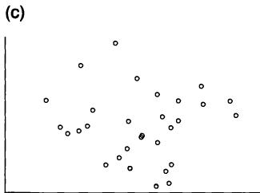
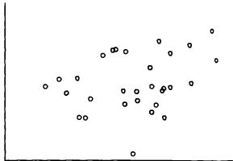
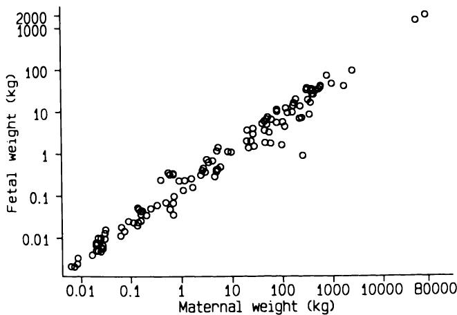
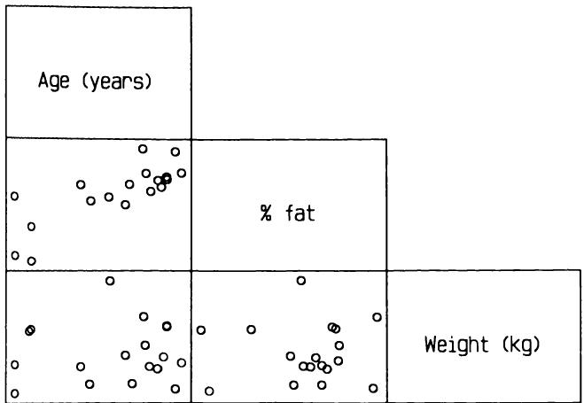
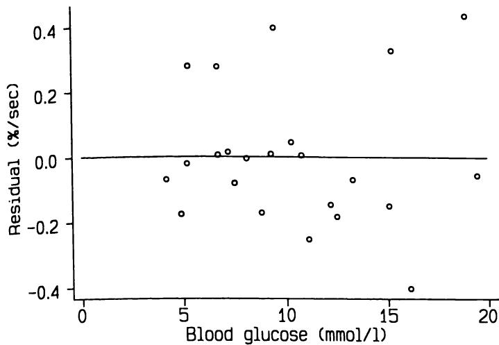
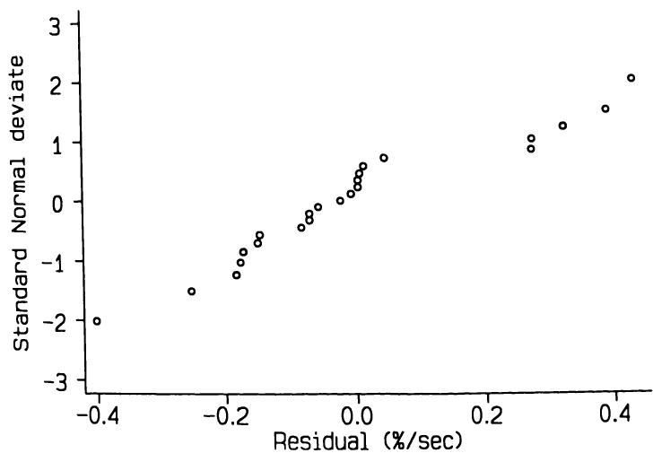
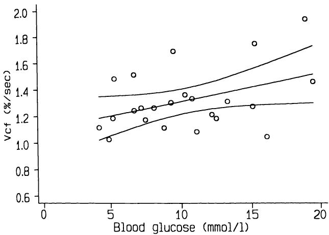
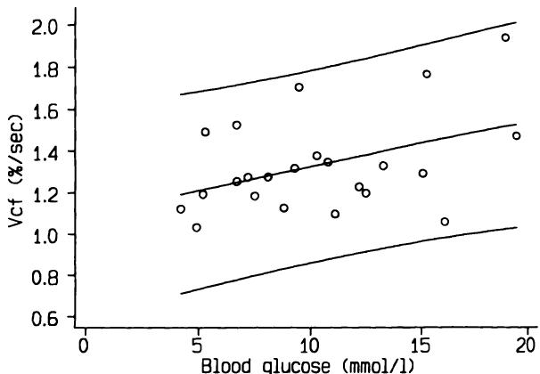

11 两个连续变量之间的关系 11 Relation between two continuous variables
11.1 关联、预测与一致性 11.1 ASSOCIATION, PREDICTION AND AGREEMENT
大量统计分析都是为了研究一组受试者中两个变量之间的关系。此类分析的三个主要目的可能是：
A high proportion of statistical analyses are carried out to study the relation between two variables within a group of subjects. Three main purposes of such analyses might be:
1.评估两个变量是否相关，即一个变量的值是否倾向于随着另一个变量值的增高而增高（或相反，降低）；
- to assess whether the two variables are associated, that is, if the values of one variable tend to be higher (or, alternatively, lower) for higher values of the other variable;
2.根据已知的一个变量值预测另一个变量的值； - to enable the value of one variable to be predicted from any known value of the other variable;
3.评估两个变量值之间的一致程度；这种情况最常见于比较测量或评估同一事物的不同方法时。 - to assess the amount of agreement between the values of the two variables; most commonly this situation arises in the comparison of alternative ways of measuring or assessing the same thing.
本章将讨论前两种可能性。一致性问题将在第14.2节中讨论。
In this chapter I shall consider the first two possibilities. The question of agreement is dealt with in section 14.2.
第10章介绍了研究分类变量间关联的方法。本章将讨论用于评估连续变量间关联的类似方法，即相关分析。相比之下，本章首次提及从一个变量预测另一个变量的方法。本章讨论从一个连续变量预测另一个连续变量，采用的技术是线性回归。当一个变量是分类变量时，需用稍有不同的逻辑回归技术，该内容将在第12章介绍。
Methods for studying association between categorical variables were introduced in Chapter 10. In this chapter I shall consider comparable methods for assessing the association between continuous variables, using the method known as correlation. In contrast, this is the first mention of methods for predicting one variable from another. This chapter considers the prediction of one continuous variable from another, for which the technique of linear regression is used. The slightly different technique of logistic regression, which is needed when one variable is categorical, will be considered in Chapter 12.
本章专注于两种技术—相关和回归，这两者常常被一起呈现，以至于容易给人一种它们不可分割的印象。事实上，它们的目的不同，真正同时对同一数据集进行两种分析的情况较少。相关与回归之间的混淆，很可能源于许多教科书中对两者技术区分不清，而这种不清楚又源于两种方法在数学上的紧密联系。显然，进行某种特定分析的理由至关重要，本章将特别强调这一点。
This chapter is devoted to two techniques, correlation and regression, which are so often presented together that it is easy to get the impression that they are inseparable. In fact, they have distinct purposes and it is relatively rare that one is genuinely interested in performing both analyses on the same set of data. The confusion that clearly exists between correlation and regression may well stem from poor differentiation between the techniques in many textbooks, which in turn arises from the very close mathematical relation between the two methods. Clearly the rationale for
进行特定分析的理由是至关重要的，本章将对此给予特别强调。
carrying out a particular analysis is of paramount importance, and this aspect will be particularly stressed in this chapter.
11.2 相关性 11.2 CORRELATION
相关性是研究两个连续变量之间可能关联时使用的分析方法。图11.1显示了18名年龄在23至61岁的正常成年人中体脂百分比（）与年龄的关系。这些数据来自一项关于评估身体成分新方法的小型研究。两变量的数值之间似乎存在某种关联；我们可以看到年龄较大的人体脂百分比倾向于较高。
Correlation is the method of analysis to use when studying the possible association between two continuous variables. Figure 11.1 shows the relation between body fat percentage and age among 18 normal adults aged 23 to 61. The data come from a small study investigating a new method of assessing body composition. There appears to be some association between the values of the two variables; we can see that there is a tendency for the older people to have a higher percentage of body fat.
如果我们想测量关联的程度，可以通过计算相关系数来实现，通常简称为相关性。标准方法（通常归功于Pearson）得到一个称为的量，其取值范围为到。相关系数衡量两个变量数值之间的“直线”关联程度。因此，当散点图中所有点都完美地落在一条直线上时，的值为或，如图11.2所示。图中还展示了具有中间值的数据示例。当一个变量的较高数值与另一个变量的较高数值相关时，两个变量的相关性为正；如果一个变量趋于较低而另一个变量变高，则相关性为负。相关系数接近零表示两个变量之间没有线性关系（即不相关）。
If we want to measure the degree of association, this can be done by calculating the correlation coefficient, often loosely just called the correlation. The standard method (often ascribed to Pearson) leads to a quantity called which can take any value from to . This correlation coefficient measures the degree of 'straight- line' association between the values of the two variables. Thus a value of or is obtained if all the points in a scatter diagram lie on a perfect straight line, as shown in Figure 11.2. Also shown are examples of data with intermediate values of . The correlation between two variables is positive if higher values of one variable are associated with higher values of the other and negative if one variable tends to be lower as the other gets higher. A correlation of around zero indicates that there is no linear relation between the values of the two

图11.1 18名正常成年人中体脂百分比（%fat）与年龄的关系（Mazess等，1984年）。
Figure 11.1 Body fat percentage (%fat) related to age for 18 normal adults (Mazess et al., 1984).
显然，图11.1中的变量是正相关的；实际上，相关系数计算结果为。
variables (i.e. they are uncorrelated). Clearly the variables in Figure 11.1 are positively correlated; in fact the correlation coefficient can be calculated to be .
我们用测量的是什么？本质上，是点围绕潜在线性趋势的散布程度的度量：点的散布越大，相关性越低。在前述研究中，使用双光子吸收法测量体脂占总体重的百分比。图11.3显示了相同18名受试者的体脂百分比与体重的关系。显然，数据散布较大，且体脂百分比与体重之间没有明显的潜在关系。这两个变量的相关系数为0.03，证实了视觉印象。
What are we measuring with ？ In essence is a measure of the scatter of the points around an underlying linear trend: the greater the spread of the points the lower the correlation. In the study already referred to, dual- photon absorptiometry was used to derive a measure of body fat as a percentage of total body mass. Figure 11.3 shows fat plotted against weight for the same 18 subjects. It is clear that there is considerable scatter with no obvious underlying relationship between fat and weight. The correlation between these two variables is 0.03, confirming the visual impression.
一个非常强相关的例子是不同哺乳动物物种的母体体重与胎儿体重的数据。图11.4显示了这些数据经过对数转换后的散点图。两个变量的相关系数为0.985，且关系在从蝙蝠到鲸鱼的极端物种之间表现出极其一致的规律。
An example of very strong correlation is given by data relating maternal and fetal weight of different species of mammal. Figure 11.4 shows a plot of these data after log transformation. The correlation between the two variables is 0.985, and the relation is clearly remarkably consistent from bats at one extreme through to whales at the other.
11.2.1 数据分布 11.2.1 Data distribution
相关系数可以针对任何数据集计算。然而，相关性假设检验的有效性有一个限制条件，即两个变量必须是在随机抽取的个体样本上观察到的，且至少有一个变量在总体中服从正态分布。为了计算的有效置信区间，两个变量都应服从正态分布。
The correlation coefficient can be calculated for any data set. However, there is a restriction on the validity of the associated hypothesis test, which is that the two variables are observed on a random sample of individuals and that the data for at least one of the variables have a Normal distribution in the population. For the calculation of a valid confidence interval for both variables should have a Normal distribution.
因此，实际上，为了使用Pearson的，最好两个变量都近似服从正态分布。这类数据通常呈现大致椭圆形的分布，椭圆的拉长程度与相关系数有关。然而，对于样本量较小或接近或的情况，这一特征可能不易察觉。检验假设的最简单方法是检查数据的散点图，计算相关系数时应常规生成该图。通过散点图通常可以很容易判断数据是否呈现合理的椭圆形分布。虽然可以绘制正态概率图，并通过Shapiro-Wilk W检验（见第7章）正式检验正态性，但通常不必如此，因为散点图通常足够。
In practice, therefore, it is preferable for both variables to have approximately Normal distribution for any use of Pearson's . Data of this type will display a roughly elliptical pattern, with the degree of elongation of the ellipse being related to the correlation coefficient. For small samples, or where is near or , this feature may be hard to detect, however. The easiest way to check the validity of the hypothesis test is by examining a scatter diagram of the data, which ought to be produced as a matter of routine whenever correlation coefficients are calculated. It should be easy to tell whether the data show a reasonably elliptical pattern. Normal plots could be produced, and Normality can be tested formally by the Shapiro- Wilk W test (see Chapter 7), but it is not really necessary because the scatter plot will usually suffice.
如果数据不服从正态分布，可以对一个或两个变量进行变换，如图11.4所示的数据，或者计算非参数相关系数，详见第11.4节。
If the data do not have a Normal distribution either or both of the variables can be transformed, as for the data shown in Figure 11.4, or a non- parametric correlation coefficient can be calculated, as described in section 11.4.
关于的数学计算、置信区间及相关假设检验详见第11.7节。
The mathematical calculations for , its confidence interval, and the associated hypothesis tests are shown in section 11.7.
280 两个连续变量之间的关系
280 Relation between two continuous variables

(b)
(b)



(d)
(d)

图11.2 相关系数(r)分别为：(a) 1.0；(b) -1.0；(c) 0.0；(d) 0.3；(e) -0.5；(f) 0.7的数据。
Figure 11.2 Data with correlation coefficients (r) of (a) 1.0; (b) -1.0; (c) 0.0; (d) 0.3; (e) -0.5; (f) 0.7.


图11.3 18名正常成年人脂肪百分比与体重的关系（Mazess等，1984年）。
Figure 11.3 Relation between percentage of fat and bodyweight in 18 normal adults (Mazess et al., 1984).

图11.4 121种哺乳动物胎儿总重与非孕母体重的关系（Leitch等，1959年）。
Figure 11.4 Relation between total fetal weight and non-pregnant maternal weight in 121 species of mammal (Leitch et al., 1959).
11.2.2 的置信区间 11.2.2 Confidence interval for
【11】2.2 的置信区间 我们可以在假设样本具有代表性的前提下，获得总体相关系数的置信区间。对于图11.1中的数据，相关系数为0.79。采用第11.7节描述的方法，我们可以得到相关系数的95%置信区间为0.52到0.92。正如小样本中常见的那样，置信区间较宽，但这确实表明两个变量之间存在较强的关联。
11.2.2 Confidence interval for We can obtain a confidence interval for the correlation in the population, on the assumption that the sample is representative. For the data in Figure 11.1 the correlation coefficient is 0.79. Using the method described in section 11.7 we can obtain the confidence interval for the correlation coefficient as being from 0.52 to 0.92. As is usual in small samples, the confidence interval is wide, but it does suggest that there really is quite a strong association between the two variables.
11.2.3 的假设检验 11.2.3 Hypothesis test for
11.2.3 的假设检验 有一种基于 分布的简单显著性检验，用于检验无关联的原假设。该方法在第11.7节中有描述。然而，表B7列出了临界值，可以直接查找观察到的 值；这对于大多数实际情况已足够。例如，图11.1中显示的数据中，脂肪百分比与年龄的相关系数为0.79，查表B7可知 。
11.2.3 Hypothesis test for There is a simple test of significance of the null hypothesis of no association which is based on the distribution. The method is described in section 11.7. However, Table B7 shows critical values which allow observed values of to be looked up directly; these should suffice for most practical purposes. For example, the correlation between fat and age in the data shown in Figure 11.1 was 0.79, and from Table B7 we can see that .
11.3 相关性的使用与误用 11.3 USE AND MISUSE OF CORRELATION
除第11.2.1节提到的分布假设外，另一个限制是所有观察值应相互独立。实际上，这意味着每个研究对象的每个变量只能有一个观察值。当部分或全部受试者有多个观察值时，相关分析不再有效。例如，若对孕妇在不同孕周测量血压和雌激素水平多次，使用相关分析来关联这两者是不正确的。在这种情况下，正确的分析可能非常复杂。
As well as the distributional assumptions mentioned in section 11.2.1, another restriction is that all the observations should be independent. In practice this means that only one observation of each variable should come from each individual in the study. The analysis is not valid when there is more than one observation for some or all of the subjects. For example, it would not be correct to use correlation to relate, say, blood pressure and oestrogen levels in pregnant women with varying numbers of observations at different gestational ages. In such circumstances a proper analysis can be very complex.
即使上述假设未被违反，相关分析的使用也并非看上去那么简单。事实上，相关分析的误用非常普遍，以至于一些统计学家希望该方法从未被发明。最明显的普遍误用出现在记录大量变量的研究中。显然，变量越多，可以计算的相关系数越多，随后挑选出统计显著的相关系数。虽然“数据挖掘”在探索性分析中有限度地被接受，但若过度使用，过度解读的风险极大。例如，仅有10个变量，就可以计算45个变量对之间的相关系数。此问题将在11.8节进一步讨论。
Even when the assumptions just mentioned are not violated the use of correlation is not as simple as it looks. Indeed, misuse of correlation is so common that some statisticians have wished that the method had never been devised. The most obvious general misuse occurs in studies in which large numbers of variables have been recorded. Clearly, with many variables it is possible to calculate hundreds of correlation coefficients and then pick out just those which are statistically significant. While 'data- dredging' is acceptable in a limited way in exploratory analyses, when taken to extremes the scope for over- interpretation is considerable. For example, even with only ten variables 45 correlations between pairs of variables can be calculated. This problem is discussed further in section 11.8.
相关性还有几种较为具体的误用类型，性质各异但均常见。下面讨论六种类型。每种情况下，数学计算本身无误，但解释存在缺陷。
There are several rather more specific misuses of correlation, each somewhat different in nature but all frequently seen. Six types are discussed below. In each case there is nothing wrong with the mathematical calculations, but the interpretation is flawed.
11.3.1 涉及时间的虚假相关 11.3.1 Spurious correlations involving time
两个变量若均为随时间重复测量，其相关性可能极具误导性。通过这种方式，可以“证明”汽油价格与离婚率、黄油消费与农民收入（负相关）等关系。另一个例子见第5.13节。
The correlation of two variables both of which have been recorded repeatedly over time can be grossly misleading. By such means one may demonstrate relationships between the price of petrol and the divorce rate, consumption of butter and farmers' incomes (a negative relation), and so on. Another example was given in section 5.13.
对个体随时间变化的两个变量进行研究时，同样需谨慎。这类相关性往往是虚假的：在计算相关之前，必须去除数据中的时间趋势，这需要专家协助。时间相关数据将在第14.6节进一步讨论。
The same caution applies to studying two variables over time for an individual. Such correlations are often spurious: it is necessary to remove the time trends from such data before correlating them, and this is an area that requires expert assistance. Time- related data are considered further in section 14.6.
11.3.2 个体的有限抽样 11.3.2 Restricted sampling of individuals
如前所述，隐含的假设是所研究的受试者是来自某一特定人群（如孕妇或高血压男性）的随机样本（或近似随机样本）。因为某个变量的取值而有意地增加或减少样本中的个体，会对相关系数产生显著影响。例如，如果我们向图11.1所示的数据集中添加几个儿童，相关系数将大幅增加；而如果排除身高超过 的个体，相关系数则会降低（降至 ）。这两种操作都无法使相关系数得到有效解释，因为样本不再是合适的随机样本。相关分析对样本选择尤为敏感，因为每个变量的个体间变异直接参与计算。
As already indicated, there is an implicit assumption that the subjects being studied are a random sample (or nearly so) from some specified population of individuals, such as pregnant women or hypertensive men. Deliberately adding or taking away from our sample some individuals because of their values of one of the variables can have a dramatic effect on the correlation. For example, if we added a few children to the data set shown in Figure 11.1 we would increase the correlation considerably, whereas if we excluded anyone taller than we would decrease the correlation (to ). Neither manoeuvre would allow a valid interpretation of the correlation coefficient because the sample would no longer be a proper random sample. Correlation analysis is especially sensitive to the sample selection because the between subject variation in each variable enters directly into the calculation.
11.3.3 混合样本 11.3.3 Mixed samples
当样本包含不同亚组时，计算相关系数可能会产生误导。例如，图11.1中的体脂数据涉及14名女性和4名男性。男性的体脂百分比通常较低，且这4名男性明显比女性年轻，因此混合性别会导致相关系数被高估（见图11.5）。因此，最好仅考虑女性样本，此时相关系数较低，为 。混合亚组的另一个后果是，混合后的数据可能不服从正态分布，但除非各组差异很大且样本量充足，否则难以检测该效应。
It may be misleading to calculate the correlation when the sample comprises different subgroups. For example, the body fat data in Figure 11.1 relate to 14 women and 4 men. Body fat percentage tends to be lower in men, and it happens that the four men in this study were considerably younger than the women, so mixing the sexes tends to inflate the correlation (see Figure 11.5). It would therefore be better to consider the

图11.5 按年龄划分的体脂百分比，男性（+）和女性（O）。
Figure 11.5 % fat by age showing males (+) and females (O).
women only, for whom we get rather lower . Another consequence of the mixing of subgroups is that the data (when mixed) may not be Normally distributed, but the effect cannot be detected unless the groups are very different and the sample is large.
11.3.4 评估一致性 11.3.4 Assessing agreement
医学研究中经常需要比较两种测量同一数量的方法。实验室方法中常见此类问题，临床医学中也很普遍，特别是在无法直接测量感兴趣数量时。血压就是一个明显的例子。
In medical research there is frequently the need to compare two methods of measuring the same quantity. Laboratory methods throw up many such problems, but they are also common in clinical medicine, particularly where it is not possible to measure directly the quantity of interest. Blood pressure is an obvious example.
分析此类数据最常用的方法是计算相关系数，但这是一种误解的分析。如前所述，相关系数衡量的是两个量之间的关联程度；它不衡量它们的一致性（Bland 和 Altman, 1986）。方法比较研究在第14.2节中有详细讨论。
The most common method of analysing such data is to calculate the correlation coefficient, but this is a misconceived analysis. As we have seen, the correlation coefficient measures the degree of association between two quantities; it does not measure how closely they agree (Bland and Altman, 1986). Method comparison studies are discussed in detail in section 14.2.
11.3.5 与初始值相关的变化 11.3.5 Change related to initial value
使用相关分析研究初始测量值与该测量值变化之间的关系时，会出现一种截然不同的问题。
A rather different problem occurs with the use of correlation to study the relation between an initial measurement and the change in that measure.
随时间的变化。例如，我们可能有兴趣观察一种旨在降低血清胆固醇的饮食是否在初始血清胆固醇较高的人群中更有效。这是一个合理的问题，但遗憾的是，在这里使用相关性是具有误导性的。原因在于，对于任意两个量 和 ， 会与 相关。事实上，即使 和 是随机数样本，我们也预期 与 之间的相关系数约为0.7。（你可以用表B13中的随机数表尝试验证。）换句话说，即使饮食无效，我们也预期初始血清胆固醇与血清胆固醇变化之间会有较大的相关性。这种现象称为均值回归，进一步混淆了回归与相关的概念。
ment over time. For example, we may be interested in seeing whether a diet designed to lower serum cholesterol was more effective in people with higher initial values of serum cholesterol. This is a reasonable question, but unfortunately it turns out that the use of correlation here is misleading. This is because for any two quantities and , will be correlated with . Indeed, even if and are samples of random numbers we would expect the correlation between and to be 0.7. (You can try this with some numbers from the table of random numbers in Table B13. ) In other words, we expect to obtain a large correlation between initial serum cholesterol and the change in serum cholesterol even if the diet is ineffective. The name for the phenomenon is regression to the mean, giving another confusion between regression and correlation.
解决此问题的最简单方法是取初始值和最终测量值的平均数，并计算该量与观察到的变化之间的相关性。用上述符号表示，即计算 与 的相关系数。如果该相关系数较大，则可以合理推断变量的较高初始水平与随时间的较大下降（或较小上升）相关。然而，这类数据的最佳处理方法较为复杂：Blomqvist（1986）和 Hayes（1988）对此有进一步讨论。这类问题远比表面复杂，建议寻求统计学专业意见。
The simplest way around this problem is to take the average of the initial and final measurement and calculate the correlation between this quantity and the observed change. In the above notation this means correlating with . If this correlation is large it may reasonably be inferred that higher initial levels of the variable are associated with larger falls over time (or smaller rises). However, the best approach to this type of data is complex: further discussion is given by Blomqvist (1986) and Hayes (1988). There is more to this type of problem than is apparent, and statistical advice is recommended.
11.3.6 部分与整体的关系 11.3.6 Relating a part to the whole
如果研究组成部分与总量之间的关系，会出现类似情况。例如，我们预期会发现以下相关性：
A similar situation arises if we study the relation between a constituent and the total amount. For example, we would expect to find a correlation between:
【1】 5岁时的身高与成年身高；
- height at age 5 and adult height;
【2】 黄体期长度与整个月经周期长度；
2. length of the luteal phase and length of the whole menstrual cycle; and
【3】 蛋白质摄入量与总热量摄入量；
3. intake of protein and intake of calories;
因为在每种情况下，第二个量包含第一个量，尽管不一定是显式包含。第一个量与其在总量中的补充部分之间可能没有关系（甚至存在负相关）。如前节讨论的问题，将分析表达为 与 之间的相关性，表明无论 和 是什么，这两个量都是相关的。
because in each case the second quantity contains the first, although not necessarily explicitly. There may be no relation (or even a negative relation) between the first quantity and its complement within the total. As with the problem discussed in the previous section, expressing the analysis as the correlation between and shows that the two quantities are related whatever and are.
11.4 秩相关 11.4 RANK CORRELATION
秩的概念在第2章中引入，第9章展示了其在两组连续数据比较中的应用。
The concept of ranks was introduced in Chapter 2 and applications to the comparison of continuous data from two groups were shown in Chapter 9.
在考虑两个变量之间的关系时，也可以类似地使用秩。这里的想法很简单，就是对每个变量对一组受试者进行排序，然后比较排序顺序。例如，表11.1显示了图11.1中年龄和脂肪百分比（ fat）的数据，以及观察值的秩。当两个值相同时，两个值均赋予平均秩。
A similar use of ranks is possible when considering the relation between two variables. The idea here is simply to rank a set of subjects for each variable and compare the orderings. For example, Table 11.1 shows the data for age and measurements of fat from Figure 11.1, together with the ranks of the observations. Where two values are the same the average rank is assigned to both.
为了使关系更清晰，受试者按年龄排序。这样排列数据可以让我们快速判断两个变量是否可能相关，因为很容易判断第二列秩值是趋向增加还是减少。
To make the relationship clearer, the subjects have been ordered by age. Arranging data like this allows us to get a quick impression about the possibility that the two variables are associated, as it is quite easy to judge whether the values in the second column of ranks are tending to increase or decrease.
计算秩相关系数有两种常用方法，一种是斯皮尔曼（Spearman）方法，另一种是肯德尔（Kendall）方法。一般来说，计算斯皮尔曼的（常称为斯皮尔曼的）比计算肯德尔的更简单，因此这里使用斯皮尔曼系数。计算过程见第11.7节。实际上，斯皮尔曼秩相关系数与对观察值秩计算的皮尔逊相关系数完全相同。
There are two commonly used methods of calculating the rank correlation coefficient, one due to Spearman and one to Kendall. It is easier in general to calculate Spearman's (often called Spearman's (rho)) than Kendall's (tau), so it is the Spearman coefficient that is used here. The calculations are shown in section 11.7. In fact, Spearman's rank correlation coefficient is exactly the same as the Pearson correlation coefficient calculated on the ranks of the observations.
表11.1中年龄与脂肪百分比数据的秩相关系数为0.75，接近标准皮尔逊相关系数0.79。
The rank correlation between the age and fat data shown in Table 11.1 is 0.75, which is close to the value 0.79 obtained as the standard
表11.1 18名正常成人的年龄和脂肪百分比（通过双光子吸收法测量）（Mazess等，1984）
Table 11.1 Age and fat (measured by dual-photon ab sorptiometry) for 18 normal adults (Mazess et al., 1984)
| 受试者 | 年龄 | 秩 | 脂肪百分比 | 秩 |
| 1 | 23 | 1.5 | 9.5 | 2 |
| 2 | 23 | 1.5 | 27.9 | 7 |
| 3 | 27 | 3.5 | 7.8 | 1 |
| 4 | 27 | 3.5 | 17.8 | 3 |
| 5 | 39 | 5 | 31.4 | 11 |
| 6 | 41 | 6 | 25.9 | 5 |
| 7 | 45 | 7 | 27.4 | 6 |
| 8 | 49 | 8 | 25.2 | 4 |
| 9 | 50 | 9 | 31.1 | 10 |
| 10 | 53 | 10.5 | 34.7 | 16 |
| 11 | 53 | 10.5 | 42.0 | 18 |
| 12 | 54 | 12 | 29.1 | 8 |
| 13 | 56 | 13 | 32.5 | 12 |
| 14 | 57 | 14 | 30.3 | 9 |
| 15 | 58 | 15.5 | 33.0 | 13 |
| 16 | 58 | 15.5 | 33.8 | 14 |
| 17 | 60 | 17 | 41.1 | 17 |
| 18 | 61 | 18 | 34.5 | 15 |
| Subject | Age | Rank | %Fat | Rank |
| 1 | 23 | 1.5 | 9.5 | 2 |
| 2 | 23 | 1.5 | 27.9 | 7 |
| 3 | 27 | 3.5 | 7.8 | 1 |
| 4 | 27 | 3.5 | 17.8 | 3 |
| 5 | 39 | 5 | 31.4 | 11 |
| 6 | 41 | 6 | 25.9 | 5 |
| 7 | 45 | 7 | 27.4 | 6 |
| 8 | 49 | 8 | 25.2 | 4 |
| 9 | 50 | 9 | 31.1 | 10 |
| 10 | 53 | 10.5 | 34.7 | 16 |
| 11 | 53 | 10.5 | 42.0 | 18 |
| 12 | 54 | 12 | 29.1 | 8 |
| 13 | 56 | 13 | 32.5 | 12 |
| 14 | 57 | 14 | 30.3 | 9 |
| 15 | 58 | 15.5 | 33.0 | 13 |
| 16 | 58 | 15.5 | 33.8 | 14 |
| 17 | 60 | 17 | 41.1 | 17 |
| 18 | 61 | 18 | 34.5 | 15 |
当然，这种接近并非总是如此。当散点图中的数据偏离椭圆形状时，两种方法往往会有所不同。由于这表明不适合计算皮尔逊相关系数，因此当和明显不同的时候，应使用。实际上，我们不会同时计算和，而是根据散点图的形态选择方法。秩相关可以用于任何类型的分布模式，且优点在于它不仅评估线性关联，更能反映更广泛的关联。例如，的值在对任一变量进行对数变换后保持不变。然而，我之前对相关分析的所有警告同样适用于秩相关。
Pearson correlation. This is not always the case, of course. The two methods will tend to differ when the data deviate from an elliptical shape in the scatter diagram. As this is an indication against the calculation of Pearson's , it follows that when and differ noticeably it is that should be used. In practice we do not calculate both and , but choose the method according to the appearance of the scatter diagram. Rank correlation may be used whatever type of pattern is seen and it has the advantage of not specifically assessing linear association but more general association. This may be seen, for example, from the fact that the value of is unchanged by logarithmic transformation of either of the variables. All my earlier cautions against the use of correlation apply equally to rank correlation, however.
Hughes和Jones（1985）研究了46个国家中膳食纤维平均摄入量与初潮平均年龄的关系。他们报告的相关系数为（）。然而，如图11.6所示，数据倾向于聚集为两个主要群体，大致对应发达国家和发展中国家，且存在一个极端点。因此，两变量的数据均不接近正态分布。我们可能更倾向于使用秩相关，得到。我们可以将相同的和值视为大致等价，因此根据表B7，较弱的秩相关依然高度显著（）。
Hughes and Jones (1985) studied the relation between average intake of dietary fibre and the average age of menarche in 46 countries. They quoted a correlation coefficient of ( ). However, as Figure 11.6 shows, the data tend to cluster in two main groups, corresponding roughly to developed and developing countries, and there is one extreme point. The data are thus not near to a Normal distribution for either variable. We might, therefore, prefer to use rank correlation, which gives . We can interpret identical values of and as being roughly equivalent, so from Table B7 the rather weaker rank correlation is also highly significant ( ).

图11.6 46个国家膳食纤维平均每日摄入量与初潮平均年龄的关系（Hughes和Jones，1985）。
Figure 11.6 Relation between average daily intake of dietary fibre and mean age of menarche in 46 countries (Hughes and Jones, 1985).
我们可以用与完全相同的方法计算的置信区间。按照第11.7节的方法，纤维与初潮数据的95%置信区间为0.32至0.87。尽管值非常小，数据仍兼容总体相关系数的较宽范围可能性。
We can calculate a confidence interval for in exactly the same way as for . Following the method given in section 11.7, the confidence interval for the fibre and menarche data is from 0.32 to 0.87. The data are thus compatible with a wide range of possibilities for the population correlation, despite the very small value.
我在10.9.2节中提到，秩相关可以用来评估两个有序分类变量之间的关联程度。显然，在这种情况下会有大量的并列值，因此必须使用允许处理并列值的方法版本（参见11.7.2节）。
I mentioned in section 10.9.2 that rank correlation can be used to assess the degree of association between two ordered categorical variables. Clearly there will be huge numbers of ties in this situation so it is essential to use the version of the method that allows for them (see section 11.7.2).
应该更频繁地使用秩相关。它是唯一一种非参数方法，能提供与其参数方法等量的信息（而不仅仅是一个值），且适用范围更广。通过对数据进行排序并执行常规的Pearson相关分析，利用广泛可用的计算机程序，操作非常简便。
Rank correlation should be used more often. It is the only non- parametric method which gives as much information as its parametric equivalent (rather than just a value), and it is of wider validity. It is easy to perform using widely available computer programs by ranking the data and performing the usual Pearson correlation analysis.
11.5 调整相关系数以控制另一个变量 11.5 ADJUSTING A CORRELATION FOR ANOTHER VARIABLE
有时我们掌握了第三个变量的数据，这个变量可能影响了两个其他变量之间观察到的关系。我们可以通过计算偏相关系数来调整第三个变量的影响。偏相关系数可视为在第三个变量取值相同的个体（或国家等）中，两个变量之间的估计相关性。该方法适用于Pearson或Spearman相关系数。
Sometimes we have data on a third variable that might have influenced the observed relationship between two other variables. We can adjust for the third variable by calculating the partial correlation coefficient. We can consider this to be the estimated correlation between two variables among individuals (or countries or whatever) with the same value of the third variable. The same approach can be used for Pearson's or Spearman's correlation coefficient.
Begg和Hearns（1966）研究了血细胞比容（PCV）、纤维蛋白原及其他蛋白质（白蛋白和球蛋白）对血液粘度的相对贡献。表11.2展示了他们对32名住院患者的数据。四个变量之间的相关系数以相关矩阵形式列于表11.3。血液粘度与PCV的相关系数为0.88（），与纤维蛋白原的相关系数为0.46（）。作者使用偏相关分析检验在控制PCV影响后，血液粘度与纤维蛋白原的关联是否仍然存在。偏相关系数为0.21（），提示血液粘度与纤维蛋白原的关联很大程度上可由PCV的变异解释。
Begg and Hearns (1966) were interested in the relative contributions of haematocrit (packed cell volume, PCV), fibrinogen and other proteins (albumin and globulin) to the viscosity of blood. Table 11.2 shows their data from 32 hospital patients. The correlation coefficients between the four variables are shown as a correlation matrix in Table 11.3. The correlation between blood viscosity and PCV was 0.88 and between blood viscosity and fibrinogen was 0.46 . The authors used partial correlation to see if the association of blood viscosity and fibrinogen remained after allowing for the association with PCV. The partial correlation is 0.21 , suggesting that the association between blood viscosity and fibrinogen can be largely explained by variation in PCV.
James（1985）提供了19个欧洲国家的双卵双胞胎率（DZ）和平均每日牛奶消费量与纬度的关系数据（见表11.4）。James特别关注DZ双胞胎率与纬度的关系，如图11.7所示。秩相关为0.68，极为显著（）。显然，三个变量的数值均呈同步上升趋势，因此我们可以探讨观察到的关联是否可以通过牛奶消费量的变异来“解释”（统计学意义）。
James (1985) gave data on dizygotic (DZ) twinning rates and average daily milk consumption for 19 European countries in relation to latitude (see Table 11.4). James was especially interested in the relation between DZ twinning rate and latitude, shown in Figure 11.7. The rank correlation is 0.68, which is highly significant . It is clear that the values of all three variables tend to increase together so we might ask whether the
15个国家提供了人均牛奶消费量数据；对于这些国家，DZ双胞胎率与
observed association could be 'explained' (statistically) by variation in milk consumption. Information on per capita consumption of milk was available for 15 countries; for these the correlation between DZ twinning rate and
表11.2 32名住院患者的血液粘度、血细胞比容（PCV）、血浆纤维蛋白原及其他蛋白质数据（Begg和Hearns，1966）
Table 11.2 Data on blood viscosity, packed cell volume (PCV), plasma fibrinogen and other proteins from 32 hospital patients (Begg and Hearns, 1966)
| 患者 | 血液粘度（厘泊） | PCV（%） | 血浆纤维蛋白原（mg/100 ml） | 血浆蛋白（g/100 ml） |
| 1 | 3.71 | 40 | 344 | 6.27 |
| 2 | 3.78 | 40 | 330 | 4.86 |
| 3 | 3.85 | 42.5 | 280 | 5.09 |
| 4 | 3.88 | 42 | 418 | 6.79 |
| 5 | 3.98 | 45 | 774 | 6.40 |
| 6 | 4.03 | 42 | 388 | 5.48 |
| 7 | 4.05 | 42.5 | 336 | 6.27 |
| 8 | 4.14 | 47 | 431 | 6.89 |
| 9 | 4.14 | 46.75 | 276 | 5.18 |
| 10 | 4.20 | 48 | 422 | 5.73 |
| 11 | 4.20 | 46 | 280 | 5.89 |
| 12 | 4.27 | 47 | 460 | 6.58 |
| 13 | 4.27 | 43.25 | 412 | 5.67 |
| 14 | 4.37 | 45 | 320 | 6.23 |
| 15 | 4.41 | 50 | 502 | 4.99 |
| 16 | 4.64 | 45 | 550 | 6.37 |
| 17 | 4.68 | 51.25 | 414 | 6.40 |
| 18 | 4.73 | 50.25 | 304 | 6.00 |
| 19 | 4.87 | 49 | 472 | 5.94 |
| 20 | 4.94 | 50 | 728 | 5.16 |
| 21 | 4.95 | 50 | 716 | 6.29 |
| 22 | 4.96 | 49 | 400 | 5.96 |
| 23 | 5.02 | 50.5 | 576 | 5.90 |
| 24 | 5.02 | 51.25 | 354 | 5.81 |
| 25 | 5.12 | 49.5 | 392 | 5.49 |
| 26 | 5.15 | 56 | 352 | 5.41 |
| 27 | 5.17 | 50 | 572 | 6.24 |
| 28 | 5.18 | 47 | 634 | 6.50 |
| 29 | 5.38 | 53.25 | 458 | 6.60 |
| 30 | 5.77 | 57 | 1070 | 4.82 |
| 31 | 5.90 | 54 | 488 | 5.70 |
| 32 | 5.90 | 54 | 488 | 5.70 |
| Patient | Blood viscosity (cP) | PCV (%) | Plasma fibrinogen (mg/100 ml) | Plasma protein (g/100 ml) |
| 1 | 3.71 | 40 | 344 | 6.27 |
| 2 | 3.78 | 40 | 330 | 4.86 |
| 3 | 3.85 | 42.5 | 280 | 5.09 |
| 4 | 3.88 | 42 | 418 | 6.79 |
| 5 | 3.98 | 45 | 774 | 6.40 |
| 6 | 4.03 | 42 | 388 | 5.48 |
| 7 | 4.05 | 42.5 | 336 | 6.27 |
| 8 | 4.14 | 47 | 431 | 6.89 |
| 9 | 4.14 | 46.75 | 276 | 5.18 |
| 10 | 4.20 | 48 | 422 | 5.73 |
| 11 | 4.20 | 46 | 280 | 5.89 |
| 12 | 4.27 | 47 | 460 | 6.58 |
| 13 | 4.27 | 43.25 | 412 | 5.67 |
| 14 | 4.37 | 45 | 320 | 6.23 |
| 15 | 4.41 | 50 | 502 | 4.99 |
| 16 | 4.64 | 45 | 550 | 6.37 |
| 17 | 4.68 | 51.25 | 414 | 6.40 |
| 18 | 4.73 | 50.25 | 304 | 6.00 |
| 19 | 4.87 | 49 | 472 | 5.94 |
| 20 | 4.94 | 50 | 728 | 5.16 |
| 21 | 4.95 | 50 | 716 | 6.29 |
| 22 | 4.96 | 49 | 400 | 5.96 |
| 23 | 5.02 | 50.5 | 576 | 5.90 |
| 24 | 5.02 | 51.25 | 354 | 5.81 |
| 25 | 5.12 | 49.5 | 392 | 5.49 |
| 26 | 5.15 | 56 | 352 | 5.41 |
| 27 | 5.17 | 50 | 572 | 6.24 |
| 28 | 5.18 | 47 | 634 | 6.50 |
| 29 | 5.38 | 53.25 | 458 | 6.60 |
| 30 | 5.77 | 57 | 1070 | 4.82 |
| 31 | 5.90 | 54 | 488 | 5.70 |
| 32 | 5.90 | 54 | 488 | 5.70 |
纬度的相关系数为0.61。牛奶消费与纬度的秩相关为0.92，牛奶消费与DZ双胞胎率的秩相关为0.61。我们可以计算在控制牛奶消费（M）后的纬度（L）与DZ双胞胎率（T）之间的偏相关，结果为（参见11.7.3节）。这个较小的值提示，DZ双胞胎率与纬度之间观察到的关联，可能部分由牛奶消费解释。对这类国际相关性的解释是
latitude was 0.61. The rank correlation between milk consumption and latitude is 0.92 and between milk consumption and DZ twinning rate it is 0.61. We can calculate the partial correlation between latitude (L) and DZ twinning rate (T) adjusted for milk consumption (M) as (see section 11.7.3). This small value suggests that one possible explanation for the observed association between DZ twinning and latitude might be milk consumption. Interpretation of such international correlations is
表11.3 表11.2中数据的相关矩阵
Table 11.3 Correlation matrix of the data in Table 11.2
| 粘度 | 红细胞压积(PCV) | 纤维蛋白原 | |
| 红细胞压积(PCV) | 0.8788 | ||
| 纤维蛋白原 | 0.4573 | 0.4155 | |
| 蛋白质 | -0.1011 | -0.1575 | -0.0512 |
| Viscosity | PCV | Fibrinogen | |
| PCV | 0.8788 | ||
| Fibrinogen | 0.4573 | 0.4155 | |
| Protein | -0.1011 | -0.1575 | -0.0512 |
表11.4 纬度、年龄标准化的异卵双胞胎率及人均每日牛奶制品消费量（James, 1985）。括号内数字为排名
Table 11.4 Latitude, age-standardized dizygotic twinning rates and daily per capita consumption of milk products (James, 1985). Figures in brackets are ranks
| 国家 | 纬度 (L) | 异卵双胞胎率 (T) | 每千人牛奶消费量(M) |
| 葡萄牙 | 40 (1.5) | 6.5 (2) | 3.8 |
| 希腊 | 40 (1.5) | 8.8 (13) | 7.7 |
| 西班牙 | 41 (3) | 5.9 (1) | 8.2 |
| 保加利亚 | 42 (4) | 7.0 (3) | - |
| 意大利 | 44 (5) | 8.6 (11.5) | 6.5 |
| 法国 | 47 (6.5) | 7.1 (4) | 10.9 |
| 瑞士 | 47 (6.5) | 8.1 (7.5) | - |
| 奥地利 | 48 (8) | 7.5 (6) | 15.9 |
| 比利时 | 51 (9.5) | 7.3 (5) | 11.6 |
| 西德 | 51 (9.5) | 8.2 (9) | 14.1 |
| 荷兰 | 52 (11.5) | 8.1 (7.5) | 18.9 |
| 东德 | 52 (11.5) | 9.1 (16) | - |
| 英格兰和威尔士 | 53 (13.5) | 8.9 (14.5) | 17.1 |
| 爱尔兰 | 53 (13.5) | 11.0 (18) | 24.4 |
| 苏格兰 | 56 (15.5) | 8.9 (14.5) | - |
| 丹麦 | 56 (15.5) | 9.6 (17) | 16.8 |
| 瑞典 | 60 (17) | 8.6 (11.5) | 20.9 |
| 挪威 | 61 (18) | 8.3 (10) | 19.3 |
| 芬兰 | 62 (19) | 12.1 (19) | 30.4 |
| Country | Latitude (L) | DZ twinning (T) | Milk consumption rate/1000(M) |
| Portugal | 40 (1.5) | 6.5 (2) | 3.8 |
| Greece | 40 (1.5) | 8.8 (13) | 7.7 |
| Spain | 41 (3) | 5.9 (1) | 8.2 |
| Bulgaria | 42 (4) | 7.0 (3) | - |
| Italy | 44 (5) | 8.6 (11.5) | 6.5 |
| France | 47 (6.5) | 7.1 (4) | 10.9 |
| Switzerland | 47 (6.5) | 8.1 (7.5) | - |
| Austria | 48 (8) | 7.5 (6) | 15.9 |
| Belgium | 51 (9.5) | 7.3 (5) | 11.6 |
| FR Germany | 51 (9.5) | 8.2 (9) | 14.1 |
| Holland | 52 (11.5) | 8.1 (7.5) | 18.9 |
| GDR | 52 (11.5) | 9.1 (16) | - |
| England and Wales | 53 (13.5) | 8.9 (14.5) | 17.1 |
| Eire | 53 (13.5) | 11.0 (18) | 24.4 |
| Scotland | 56 (15.5) | 8.9 (14.5) | - |
| Denmark | 56 (15.5) | 9.6 (17) | 16.8 |
| Sweden | 60 (17) | 8.6 (11.5) | 20.9 |
| Norway | 61 (18) | 8.3 (10) | 19.3 |
| Finland | 62 (19) | 12.1 (19) | 30.4 |

图11.7 19个欧洲国家纬度与异卵双胞胎率的关系（James, 1985）
Figure 11.7 Relation between latitude and dizygotic twinning rate in 19 European countries (James, 1985).
然而，这类数据的分析尤其困难。注意，尽管国家从未按技术要求随机抽样，相关系数仍常用于此类数据。第11.8节讨论了解释相关系数时的一般问题。
particularly difficult, however. Note that correlation is frequently used for this type of data, although the countries are never randomly sampled as they technically should be. Section 11.8 discusses the general problems of interpreting correlation coefficients.
部分相关在医学研究中使用不多。三个或更多变量之间的关系通常用更具信息量的多元回归分析，详见第12.4节。但部分相关的计算方法将在第11.7.3节说明。
Partial correlation is not used a great deal in medical studies. The relation between three or more variables is usually investigated using the more informative multiple regression, which will be described in section 12.4. However, the method of calculating the partial correlation is explained in section 11.7.3.
11.6 使用相关系数评估非正态性 11.6 USE OF THE CORRELATION COEFFICIENT IN ASSESSING NON-NORMALITY
在第7.5.2节，我描述了如何利用正态概率图对样本观测值是否符合正态分布进行视觉评估。我介绍了Shapiro-Wilk W检验，但大多数统计软件不支持，且手工计算较难。一个更简单的替代方法是使用类似的Shapiro-Francia 检验（Royston, 1983）。
In section 7.5.2 I described the use of the Normal plot to get a visual assessment of how compatible a sample of observations is with having been drawn from a population with a Normal distribution. I described the use of the Shapiro- Wilk W test, but this is not available in most statistical packages and is too difficult to perform by hand. A much simpler alternative is to use the similar Shapiro- Francia test (Royston, 1983).
相关系数评估两个变量值之间的线性关联程度。因此，它可用于评估正态概率图的线性程度，从而判断数据是否符合正态性原假设。正态概率图是观察值与正态分数（见第7.5.4节）的散点图，我们需要计算这两组数据间的Pearson相关系数，记为 。
The correlation coefficient assesses the degree of straight- line association between the values of two variables. It can thus be used to assess the straightness of a Normal plot, and so whether the data are compatible with the null hypothesis of Normality. The Normal plot is a plot of the observed
数据与正态分数的关系（参见第7.5.4节），因此我们需要计算这两个量之间的Pearson相关系数，我称之为。
data against the Normal scores (see section 7.5.4), so we need the Pearson correlation coefficient between these two quantities, which I will call .
我们不能使用通常的表格来评估该相关系数，因为这里的原假设是相关系数为1，而非0。更容易考虑相关系数的平方，记为，称为。表B12展示了如何评估观察到的值。
We cannot use the usual tables for assessing this correlation coefficient, because the null hypothesis here is that the correlation is 1, not 0. It is easier to consider the square of the correlation , and it is which is termed . Table B12 shows how to assess an observed value of .
表11.5显示了一些血糖数据，将在本章后面使用，数据按升序排列。表中还显示了使用第7.5.2节公式计算的期望累计频率及对应的正态分数。原始数据与正态分数的相关系数为0.9772，因此的值为。根据表B12，我们得到，说明数据与来自正态总体的样本相符。
Table 11.5 shows some blood glucose data that will be used later in this chapter, sorted into ascending order. Also shown are the expected cumulative frequencies , using the formula in section 7.5.2, and the corresponding Normal scores. The correlation coefficient between the raw data and the Normal scores is 0.9772, so the value of is . From Table B12 we get , so that the data are compatible with being a sample from a Normal population.
表11.5 24名1型糖尿病患者的空腹血糖数据（Thuesen等，1985），及正态分数的计算
Table 11.5 Fasting blood glucose data from 24 type 1 diabetic patients (Thuesen et al., 1985), with calculation of Normal scores
| 患者（i） | 血糖值 | Pi | 正态分数 |
| 1 | 4.2 | 0.026 | -1.947 |
| 2 | 4.9 | 0.067 | -1.498 |
| 3 | 5.2 | 0.108 | -1.236 |
| 4 | 5.3 | 0.149 | -1.039 |
| 5 | 6.7 | 0.191 | -0.875 |
| 6 | 6.7 | 0.232 | -0.732 |
| 7 | 7.2 | 0.273 | -0.603 |
| 8 | 7.5 | 0.314 | -0.483 |
| 9 | 8.1 | 0.356 | -0.370 |
| 10 | 8.6 | 0.397 | -0.261 |
| 11 | 8.8 | 0.438 | -0.156 |
| 12 | 9.3 | 0.479 | -0.052 |
| 13 | 9.5 | 0.521 | 0.052 |
| 14 | 10.3 | 0.562 | 0.156 |
| 15 | 10.8 | 0.603 | 0.261 |
| 16 | 11.1 | 0.644 | 0.370 |
| 17 | 12.2 | 0.686 | 0.483 |
| 18 | 12.5 | 0.727 | 0.603 |
| 19 | 13.3 | 0.768 | 0.732 |
| 20 | 15.1 | 0.809 | 0.875 |
| 21 | 15.3 | 0.851 | 1.039 |
| 22 | 16.1 | 0.892 | 1.236 |
| 23 | 19.0 | 0.933 | 1.498 |
| 24 | 19.5 | 0.974 | 1.947 |
| Patient (i) | Blood glucose | Pi | Normal score |
| 1 | 4.2 | 0.026 | -1.947 |
| 2 | 4.9 | 0.067 | -1.498 |
| 3 | 5.2 | 0.108 | -1.236 |
| 4 | 5.3 | 0.149 | -1.039 |
| 5 | 6.7 | 0.191 | -0.875 |
| 6 | 6.7 | 0.232 | -0.732 |
| 7 | 7.2 | 0.273 | -0.603 |
| 8 | 7.5 | 0.314 | -0.483 |
| 9 | 8.1 | 0.356 | -0.370 |
| 10 | 8.6 | 0.397 | -0.261 |
| 11 | 8.8 | 0.438 | -0.156 |
| 12 | 9.3 | 0.479 | -0.052 |
| 13 | 9.5 | 0.521 | 0.052 |
| 14 | 10.3 | 0.562 | 0.156 |
| 15 | 10.8 | 0.603 | 0.261 |
| 16 | 11.1 | 0.644 | 0.370 |
| 17 | 12.2 | 0.686 | 0.483 |
| 18 | 12.5 | 0.727 | 0.603 |
| 19 | 13.3 | 0.768 | 0.732 |
| 20 | 15.1 | 0.809 | 0.875 |
| 21 | 15.3 | 0.851 | 1.039 |
| 22 | 16.1 | 0.892 | 1.236 |
| 23 | 19.0 | 0.933 | 1.498 |
| 24 | 19.5 | 0.974 | 1.947 |
11.7 相关性—数学及实例解析 11.7 CORRELATION - MATHEMATICS AND WORKED EXAMPLES
(本节给出本章前半部分所述计算的数学公式及实例演示，可跳过而不影响整体连贯性。)
(This section gives the mathematical formulae for the calculations described in the first part of this chapter, together with a worked example. It can be omitted without loss of continuity.)
11.7.1 Pearson相关系数 11.7.1 Pearson's
通常计算的相关系数称为Pearson相关系数，或“积差”相关系数。若有两个变量和，它们之间的相关性记为，通常简写为，计算公式为
The correlation coefficient that is usually calculated is called Pearson's or the 'product- moment' correlation coefficient. If we have two variables and , the correlation between them, denoted by or usually just , is given by
其中 和 是第 个个体的 和 的取值。宽泛地说， 的值可以看作是数据大致落入的椭圆形拉长程度的度量。该公式显然是对称的，即哪个变量是 、哪个是 并不影响结果。
where and are the values of and for the individual. The value of may loosely speaking be seen as a measure of the elongation of the ellipse that the data approximately fall within. The equation is clearly symmetric in that it does not matter which variable is and which is .
为了计算，使用一个更简单的公式是
For the purposes of calculation a simpler formula to use is
其中需要计算 、 、 、 和 。
for which it is necessary to obtain , and .
如果你已经有了均值（ 和 ）以及标准差（ 和 ），公式可以简化为
If you already have the means ( and ) and standard deviations ( and ) the formula simplifies to
这样就只需要额外计算项 。
so that it is only necessary to calculate the extra term .
然而，这个公式不应在计算机程序中使用，因为偶尔会因舍入误差引入不准确。（应使用第一个 的公式。）
This formula should not be used in a computer program, however, as inaccuracy is occasionally introduced through rounding errors. (The first equation for should be used.)
(a) 置信区间 (a) Confidence interval
Pearson 相关系数 的抽样分布不是正态分布，但我们可以对 进行变换，得到一个称为 的量，它具有正态抽样分布。变换为
The sampling distribution of Pearson's is not Normal, but we can transform to get a quantity called which does have a Normal sampling distribution. The transformation is
z 的标准误约为 ，其中 是样本量，因此我们可以构建 95% 的 置信区间，区间范围为
The standard error of is approximately where is the sample size, so we can construct a 95% confidence interval for as being from
我们将上述值反变换，以获得总体相关系数 的置信区间，表达式为
We back- transform the above values to get a confidence interval for the population correlation coefficient as
图 11.1 中的 脂肪含量与年龄数据的相关系数为 0.7921，因此我们有
The fat and age data in Figure 11.1 had a correlation of 0.7921 so we have
我们可以通过计算获得 的 95% 置信区间
We can get a confidence interval for by calculating
以及
and
得到区间为 0.5710 到 1.5831。我们将这些值反变换，以获得 ( r ) 的 95% 置信区间，
giving 0.5710 to 1.5831. We back- transform these values to get a confidence interval for as
即 0.52 到 0.92。虽然整个置信区间远大于零，但区间非常宽。
or 0.52 to 0.92. Although the whole confidence interval is much greater than zero, it is very wide.
(b) 假设检验 (b) Hypothesis test
相关系数的假设检验可以非常容易地进行。在总体中无关联（即相关系数为零）的原假设下，可以证明以下量
The hypothesis test for the correlation coefficient may be performed very easily. Under the null hypothesis that there is no association in the population (i.e. zero correlation) it can be shown that the quantity
服从自由度为 ( n - 2 ) 的 ( t ) 分布。因此，可以通过查阅 ( t ) 分布表（表 B4）来检验无关联的原假设。
has a distribution with degrees of freedom. Thus the null hypothesis of no association may be tested by looking this value up in the table of the distribution (Table B4).
图 11.1 中脂肪百分比与年龄的数据相关系数为 0.7921，因此我们有
The fat and age data in Figure 11.1 had a correlation of 0.7921 so we have
在16个自由度上
on 16 degrees of freedom
然而，表B7显示了本身的临界值，这更易于使用。对于大多数实际目的，这个表格就足够了。
However, Table B7 shows critical values for itself, and this is much easier to use. This table will prove sufficient for most practical purposes.
11.7.2 秩相关 11.7.2 Rank correlation
斯皮尔曼秩相关系数通过将两个变量的数值按顺序排名得到。表11.4中展示了一个例子。计算最简单的方法是对数据的秩计算Pearson相关系数。对于表11.4中DZ双胞胎率与纬度的数据，这给出了。
Spearman's rank correlation coefficient is obtained by ranking in order the values of each of the two variables. An example is shown in Table 11.4. The simplest way to get is to calculate Pearson's on the ranks of the data. For the data on DZ twinning rate and latitude in Table 11.4 this gives
还有一种更适合手工计算的替代方法，但它假设数据中没有并列排名。对每个被研究的个个体，计算排名差。斯皮尔曼秩相关系数由下式给出：
There is an alternative approach which is simpler for hand calculation, but it assumes that there are no ties in the data. For each of the subjects being studied the difference in the ranks, , is calculated. Spearman's rank correlation coefficient is then given by
这个公式与Pearson相关系数的公式没有明显相似之处，但在没有并列排名时，结果完全相同。
This formula bears no obvious similarity to the formula for Pearson's but gives the identical answer when there are no ties.
表11.4显示了纬度和DZ双胞胎率数据的秩。排名差的平方和为366.5，因此我们有
The ranks of the data on latitude and DZ twinning rate are shown in Table 11.4. The sum of the squares of the differences in the ranks is 366.5 so we have
虽然在数据中存在并列排名时，的计算应作调整，但除非并列排名数量较多，否则影响很小。表11.4中的纬度和DZ双胞胎数据有若干并列排名，但无论是否做修正，的值均为0.68（保留两位小数）。使用基于秩的Pearson相关系数的优点是自动处理了并列排名。此外，当然，使用标准统计软件计算也非常方便。
Although the calculation of should be modified when there are tied ranks in the data, the effect is small unless there are considerable numbers of ties. The latitude and DZ twinning data in Table 11.4 have several tied ranks but the value of is 0.68, to two decimal places, whether the correction is made or not. The advantage of the use of the Pearson correlation coefficient calculated on the ranks is that ties are automatically dealt with. Also, of course, it is easy to perform with standard statistical software.
（a）置信区间 (a) Confidence interval
对于样本量大于约10的情况， 的分布与 的分布相似，因此可以使用上述针对 的方法来获得 的置信区间。
The distribution of is similar to that of for samples larger than about 10, so a confidence interval for can be obtained using the method given above for
（b）假设检验 (b) Hypothesis test
在总体中无关联（即零相关）的原假设下，可以证明对于大样本（），量
Under the null hypothesis that there is no association in the population (i.e. zero correlation) it can be shown that for large samples the quantity
服从自由度为 的 分布。因此，可以通过查阅 分布表（表 B4）来检验无关联的原假设。同样，也可以将 与表 B7 中的临界值进行比较。对于较小的样本，应使用表 B8。
has a distribution with degrees of freedom. Thus the null hypothesis of no association may be tested by looking this value up in the table of the distribution (Table B4). Equivalently, can be compared with the critical values in Table B7. For smaller samples Table B8 should be used.
11.7.3 偏相关 11.7.3 Partial correlation
如果我们知道变量对之间的相关系数，比如 、 和 ，就可以计算调整第三个变量后的两个变量之间的相关性。为了调整变量 对变量 和 相关性的影响，我们计算调整变量 后的偏相关系数为
We can calculate the correlation between two variables after adjusting for a third if we have the correlation coefficients between each pair of variables, say , and . To adjust the correlation between variables and for the possible effect of variable we calculate the partial correlation of and adjusted for as
类似地，偏秩相关计算公式为
Similarly the partial rank correlation is calculated as
偏相关系数的假设检验与普通相关系数的检验方法相同，只是自由度为 。表11.4中变量对之间的相关系数（排除四个无牛奶消费率的国家）为
The hypothesis test for the partial correlation coefficient is performed in the same way as for the ordinary correlation coefficient, except that there are degrees of freedom. The correlations between pairs of variables in Table 11.4, omitting the four countries without milk consumption rates, were
因此，经调整牛奶消费后的纬度与DZ双胞胎率之间的偏秩相关系数为
so that the partial rank correlation coefficient between latitude and DZ twinning rate adjusted for milk consumption is
11.8 相关性的解释 11.8 INTERPRETATION OF CORRELATION
相关系数的取值范围在 到 之间，中点零表示两个变量之间没有线性关联。然而，相关系数很小并不一定意味着两个变量不相关。为了确认这一点，我们应当研究数据的散点图，因为两个变量可能表现出特殊的（即非线性）关系。例如，我们不会观察到平均正午温度与日历月份之间有明显的相关性，因为它们存在周期性模式。更常见的情况是曲线关系。
Correlation coefficients lie within the range to , with the midpoint of zero indicating no linear association between the two variables. A very small correlation does not necessarily indicate that two variables are not associated, however. To be sure of this we should study a plot of the data, because it is possible that the two variables display a peculiar (i.e. non- linear) relationship. For example, we would not observe much, if any correlation between the average midday temperature and calendar month because there is a cyclic pattern. More common is the situation of a curved
两个变量之间的关系，例如出生体重与妊娠期长度之间的关系。在这种情况下，Pearson的会低估这种关联，因为它衡量的是线性关联。秩相关系数更合适，因为它以更一般的方式评估变量是否倾向于同时上升（或朝相反方向移动）。
relationship between two variables, such as between birthweight and length of gestation. In this case Pearson's will underestimate the association as it is a measure of linear association. The rank correlation coefficient is better here as it assesses in a more general way whether the variables tend to rise together (or move in opposite directions).
令人惊讶的是，相关系数为0.5甚至0.7时，效果并不显著（见图11.2）。如表B7所示，这些大小的相关系数在样本量仅为16和9时，分别在5%的显著性水平下达到统计学显著性。它们是否重要则是另一回事。Feinstein（1985）曾评论，在超过6000的样本中发现的低于0.1的统计显著相关性缺乏临床意义。临床相关性的问题必须根据具体情况逐案判断，且依赖于研究背景。例如，同样的小相关系数在流行病学研究中可能重要，但在临床上则可能无关紧要。
It is surprising how unimpressive a correlation of 0.5 or even 0.7 is (Figure 11.2). As Table B7 shows, correlations of this magnitude are significant at the level in samples as small as 16 and 9 respectively. Whether they are important is quite another matter. Feinstein (1985) commented on the lack of clinical relevance of a statistically significant correlation of less than 0.1 found in a sample of over 6000. The problem of clinical relevance is one that must be judged on its merits in each case, and depends on the context. For example, the same small correlation may be important in an epidemiological study but unimportant clinically.
一种看待相关性的方法，有助于抑制过度热情，是计算 ，即由两个变量之间的关联“解释”的数据变异性的百分比。因此，相关系数为0.7意味着大约一半（49%）的变异性可以归因于观察到的关联，依此类推。这个概念与第11.13.6节和第12章中讨论的回归方差分析相吻合。计算相关系数的置信区间也可能有用，特别是对于小样本来说，置信区间会较宽。
One way of looking at the correlation that helps to modify over- enthusiasm is to calculate , which is the percentage of the variability of the data that is 'explained' by the association between the two variables. So a correlation of 0.7 implies that just about half (49%) of the variability may be put down to the observed association, and so on. This concept ties in with the analysis of variance for regression, discussed in section 11.13.6 and in Chapter 12. It may also be useful to calculate a confidence interval for the correlation coefficient, which for small samples will be wide.
关联的解释常常存在问题，因为不能直接推断因果关系。如果我们观察到两个变量 和 之间存在关联，有几种可能的解释。排除偶然发现的可能性后，可能是因为
Interpretation of association is often problematic because causation cannot be directly inferred. If we observe an association between two variables and there are several possible explanations. Excluding the possibility that it is a chance finding, it may be because
- A 影响（或“导致”）；
- A influences (or 'causes') ;
- B 影响 ；或者
- B influences ; or
- 和 都受到一个或多个其他变量的影响。
- both and are influenced by one or more other variables.
当对某些疑似共同原因 有数据时，可以通过计算偏相关来观察在考虑 的情况下， 和 之间的观察关联是否仍然存在。除这一例外外，通常无法通过统计方法区分上述三种可能性，推断必须基于其他知识。对于缺乏背景知识的变量，推断因果关系是不合理的。无论观察到的关联强弱如何，这一点都适用。
Where data are available for some suspected common cause , it is possible to see if the observed association between and remains when allowing for by calculating the partial correlation. With this exception, it is not in general possible to distinguish statistically between the three possibilities above, and inferences must be based on other knowledge. When looking at variables where there is no background knowledge, inferring a causal link is not justified. This applies regardless of the strength of the observed association.
例如，我们并不惊讶于看到来自许多国家的数据表明酒精消费与肝硬化死亡率之间存在关系（Smith，1981），因为关于酒精对肝脏影响的科学知识已经十分丰富。但对于显示猪肉消费与肝硬化死亡率之间关系的国际数据，我们应如何解读？Nanji 和 French（1985）报道了这样的相关性。
For example, we are not surprised to see data from many countries that show a relation between consumption of alcohol and deaths from liver cirrhosis (Smith, 1981), because of the large body of scientific knowledge about the effect of alcohol on the liver. But what should we make of international data showing a relationship between pork consumption and cirrhosis mortality？ Nanji and French (1985) reported such a correlation of
对16个国家的相关系数为，对10个加拿大省份的等级相关系数为0.60。
在没有任何科学依据支持这种关联的情况下，应对这种发现保持怀疑态度。
在可能的情况下，应尝试在不同的人群中检验相同的变量。
Seely（1985）研究了21个欧洲国家的猪肉消费与肝硬化死亡率之间的关系，其等级相关系数为0.001；完全没有关联。
for 16 countries and a rank correlation of 0.60 for 10 Canadian provinces. In the absence of any scientific reason for such an association one should be sceptical about such a finding. Wherever possible one should try to examine the same variables in a different population. Seely (1985) studied the relation between pork consumption and cirrhosis mortality in 21 European countries, for which the rank correlation was 0.001; there was no association at all.
国际间相关性的解释特别困难，因为各国之间存在诸多差异。我们不能安全地将图11.6中的数据解释为高纤维饮食导致初潮延迟（当然也不能反过来解释）。其他情况实际上也没有什么不同。无论假设多么“合理”，没有辅助证据，我们都不应将任何相关性视为因果关系。
Interpretation of international correlations is particularly difficult because there are so many differences between countries. We could not safely interpret the data of Figure 11.6 as indicating that a high fibre diet leads to delayed menarche (and certainly not the converse). Other situations are not really any different. We ought not to take any correlation as indicating a causal association without collateral evidence, however 'reasonable' the hypothesis may be.
相关性常被用作探索性方法，以调查多个变量之间的相互关系，为此最明显的做法是使用假设检验。虽然原则上没问题，但这种方法常被过度使用。问题在于，即使变量数量适中，相关系数的数量也很大—10个变量产生45个值，20个变量产生190个。仅凭偶然，约有1/20的相关系数会在5%显著性水平下显著，这些无法与真实关联区分开。此外，在5%显著性水平下显著的相关系数大小依赖于样本量。在大样本中，即使有几个相关系数约为0.2到0.3的显著值，这些相关性也不太可能非常有用。当确实没有先验假设时，这种观察大量变量的方法可能有帮助，但显著关联确实需要在另一组数据中得到确认，才能被信赖。
Correlation is often used as an exploratory method for investigating inter- relationships among many variables, for which purpose it is most obvious to use hypothesis tests. Although fine in principle, this approach is often over- done. The problem is that even with a modest number of variables the number of correlation coefficients is large - 10 variables yield values, and 20 variables yield 190. One in 20 of these will be significant at the level purely by chance, and these cannot be distinguished from genuine associations. Further, the magnitude of correlation that is significant at the level depends upon the sample size. In a large sample, even if there are several significant values of around 0.2 to 0.3, say, these are unlikely to be very useful. While this way of looking at large numbers of variables can be helpful when one really has no prior hypotheses, significant associations really need to be confirmed in another set of data before credence can be given to them.
另一个常见的解释问题出现在我们知道两个变量各自都与第三个变量有关联的情况下。例如，如果 与 呈正相关，且 与 也呈正相关，人们容易推断 必然与 也呈正相关。虽然这可能是真的，但这种推断是不合理的—我们无法对 和 之间的相关性做出任何结论。当观察到无关联时，情况也是如此。例如，在 Mazess 等人（1984年）的数据中，年龄与体重的相关系数为0.05，体重与脂肪百分比的相关系数为0.03（见图11.3）。这并不意味着年龄与脂肪百分比的相关系数也接近于零。事实上，如前所述，该相关系数为0.79（见图11.11）。这三组两变量关系见图11.8。相关性不能从间接关联中推断得出。
Another common problem of interpretation occurs when we know that each of two variables is associated with a third variable. For example, if is positively correlated with and is positively correlated with it is tempting to infer that must be positively correlated with . Although this may indeed be true, such an inference is unjustified - we cannot say anything about the correlation between and . The same is true when one has observed no association. For example, in the data of Mazess et al. (1984) the correlation between age and weight was 0.05 and between weight and fat it was 0.03 (Figure 11.3). This does not imply that the correlation between age and fat was also near zero. In fact this correlation was 0.79, as we saw earlier (Figure 11.11). These three two- way relations are shown in Figure 11.8. Correlations cannot be inferred from indirect associations.
相关性常被使用，但实际上更适合使用第11.10节及以后讨论的回归方法。两种方法的比较见第11.17节。
Correlation is often used when it would be better to use regression methods, discussed in section 11.10 onwards. The two methods are compared in section 11.17.

图11.8 散点图显示了18名正常成人（Mazess等，1984年）年龄、脂肪百分比和体重之间的两两关系。
Figure 11.8 Scatter diagrams showing each two way relation between age, fat, and weight of 18 normal adults (Mazess et al., 1984).
11.9 相关性的呈现 11.9 PRESENTATION OF CORRELATION
在可能的情况下，展示数据的散点图是有用的。在此类图中，使用不同符号表示不同类别的观测值通常很有帮助，例如用以区分患者性别。
Where possible it is useful to show a scatter diagram of the data. In such a graph it is often helpful to indicate different categories of observations by using different symbols, for example to indicate patients' sex.
相关系数的值应保留两位小数，并且如果进行了显著性检验，应同时给出值。还应说明观测值的数量。
The value of should be given to two decimal places, together with the value if a test of significance is performed. The number of observations should be stated.
如果需要显示一组变量中所有变量对之间的相关性，可以通过相关矩阵来实现，如表11.3所示。在该表中，相关系数以三角形排列显示，类似于路图中显示各城镇之间距离的图表。其图形等价物见图11.8和12.2，效果更佳。
If it is necessary to display the correlations between all pairs of a set of variables this can be done by means of a correlation matrix, as in Table 11.3. In this the correlation coefficients are shown in a triangular display similar to charts in road atlases showing the distances between each pair of towns. The graphical equivalent, shown in Figures 11.8 and 12.2, is even better.
11.10 回归 11.10 REGRESSION
当我们拥有两组连续变量的数据时，可能会出现其他问题。特别是我们可能希望描述它们之间的关系，从而能够在只知道一个变量的情况下预测另一个变量的值。显然，相关系数无法完成这些功能；它仅以一个数字表示关联的强度。我们需要一种方法来描述两个变量值之间的关系，对于这个普遍问题，我们需要使用称为回归的技术。
Other questions may arise when we have a set of data on two continuous variables. In particular we might wish to describe the relation between them, and thus be able to predict the value of one variable for an individual when we only know the other variable. Clearly the correlation coefficient does not perform these functions; it just indicates the strength of the association as a single number. We want a way of describing the
本章我将只考虑两个变量的简单情况；扩展内容将在第12章和第14章讨论。我将只考虑我们通常关注的两个变量之间的线性（直线）关系。
relation between the values of the two variables, and for this general problem we need the technique called regression. In this chapter I shall consider just the simple case where we have two variables; extensions are discussed in Chapters 12 and 14. I shall consider only the common case where we are interested in a linear (straight- line) relationship between two variables.
表11.6和图11.9展示了从24名1型糖尿病患者收集的数据。变量包括空腹血糖（mmol/l）和通过超声心动图测得的左心室环向缩短平均速度（Vcf）。其中一名患者的Vcf未被记录。如果我们希望通过血糖预测Vcf，那么与相关性不同，我们并不认为两者之间的关系是对称的。
Table 11.6 and Figure 11.9 show data collected from 24 type 1 diabetic patients. The variables are fasting blood glucose (mmol/l) and mean velocity of circumferential shortening of the left ventricle (Vcf) derived from echocardiography. One patient's Vcf was not recorded. If we are interested in trying to predict Vcf from blood glucose, then, unlike the case for correlation, we do not have a symmetric relation between the two
表11.6 24例1型糖尿病患者的数据（Thuesen等，1985年）
Table 11.6 Data from 24 type 1 diabetic patients (Thuesen et al., 1985)
| 患者 | 空腹血糖（mmol/l） | 平均环向缩短速度（Vcf）（%/秒） |
| 1 | 15.3 | 1.76 |
| 2 | 10.8 | 1.34 |
| 3 | 8.1 | 1.27 |
| 4 | 19.5 | 1.47 |
| 5 | 7.2 | 1.27 |
| 6 | 5.3 | 1.49 |
| 7 | 9.3 | 1.31 |
| 8 | 11.1 | 1.09 |
| 9 | 7.5 | 1.18 |
| 10 | 12.2 | 1.22 |
| 11 | 6.7 | 1.25 |
| 12 | 5.2 | 1.19 |
| 13 | 19.0 | 1.95 |
| 14 | 15.1 | 1.28 |
| 15 | 6.7 | 1.52 |
| 16 | 8.6 | - |
| 17 | 4.2 | 1.12 |
| 18 | 10.3 | 1.37 |
| 19 | 12.5 | 1.19 |
| 20 | 16.1 | 1.05 |
| 21 | 13.3 | 1.32 |
| 22 | 4.9 | 1.03 |
| 23 | 8.8 | 1.12 |
| 24 | 9.5 | 1.70 |
| Patient | Fasting blood glucose (mmol/l) | Mean circumferential shortening velocity (Vcf) (%/sec) |
| 1 | 15.3 | 1.76 |
| 2 | 10.8 | 1.34 |
| 3 | 8.1 | 1.27 |
| 4 | 19.5 | 1.47 |
| 5 | 7.2 | 1.27 |
| 6 | 5.3 | 1.49 |
| 7 | 9.3 | 1.31 |
| 8 | 11.1 | 1.09 |
| 9 | 7.5 | 1.18 |
| 10 | 12.2 | 1.22 |
| 11 | 6.7 | 1.25 |
| 12 | 5.2 | 1.19 |
| 13 | 19.0 | 1.95 |
| 14 | 15.1 | 1.28 |
| 15 | 6.7 | 1.52 |
| 16 | 8.6 | - |
| 17 | 4.2 | 1.12 |
| 18 | 10.3 | 1.37 |
| 19 | 12.5 | 1.19 |
| 20 | 16.1 | 1.05 |
| 21 | 13.3 | 1.32 |
| 22 | 4.9 | 1.03 |
| 23 | 8.8 | 1.12 |
| 24 | 9.5 | 1.70 |

图11.9 空腹血糖与左心室环向缩短平均速度（Vcf）之间的关系。数据来自23例1型糖尿病患者（Thuesen等，1985年）。
Figure 11.9 Relation between fasting blood glucose and mean velocity of circumferential shortening of the left ventricle (Vcf). Data from 23 type 1 diabetics (Thuesen et al., 1985).
变量。我们可以将这些视为响应变量（或结果变量）（Vcf）和预测变量（血糖）。这两者通常分别称为因变量和自变量，这两个术语容易混淆，但其含义是指一个变量依赖于另一个变量。响应变量总是绘制在垂直轴，即 轴上，预测变量绘制在水平轴，即 轴上，如图11.9所示。
variables. We may consider these as a response (or outcome) variable (Vcf) and a predictor variable (blood glucose). These are often called dependent and independent variables respectively, confusing names which indicate which variable is depending on the other. The response variable is always plotted on the vertical, or , axis and the predictor variable on the horizontal, or , axis, as illustrated in Figure 11.9.
问题在于如何拟合一条直线，使其在某种意义上对任意 值给出对 的“最佳”预测。直观上，这条线应使数据点与拟合线之间的距离最小化。对此问题有多种方法，但标准方法称为最小二乘回归。当我们使用该方法拟合回归线时，目标是最小化观测点到回归线的垂直距离的平方和。图11.10展示了相同数据及其最小二乘回归线，并标出了各点到线的垂直距离。每个距离是个体观测值与回归线给出的拟合值之间的差异。该距离的专业术语是残差，本文后续将使用该词。注意，这种方法的解不依赖于图形的比例尺。如果改用垂直线的垂直距离（另一种可能），解将依赖于图形的绘制方式，这显然是不理想的。
The problem is to fit a straight line to the data that in some sense gives the 'best' prediction of for any value of . Intuitively this will be a line that minimizes the distance between the data and the fitted line. There are several possible approaches to this problem, but the standard method is called least squares regression. When we use this method to fit a regression line we minimize the sum of the squares of the vertical distances of the observations from the line. Figure 11.10 shows the same data with the least squares regression line, together with the vertical distances from the line. Each distance is the difference for an individual between the observed value and the value given by the line, known as the fitted value. The technical term for this distance is a residual, a term I shall use from now on. Notice that this approach gives a solution that does not depend on the scaling of the graph. If we were to take distances perpendicular to the line (which is an alternative possibility) the solution would depend on the way the graph was drawn, which is clearly an undesirable feature.

图11.10 图11.9的数据及其回归线，显示观测值与拟合值之间的差异。
Figure 11.10 Data of Figure 11.9 with regression line, showing differences between observed and fitted values.
最小二乘法产生的回归线使残差平方和最小，因此也最小化了残差的方差，即残差平方和除以观测数减二。该方差称为残差方差，是衡量拟合优度的重要指标。残差方差在回归分析结果评估中极为重要。
The least squares method produces the line that minimizes the sum of the squares of the residuals, and so it also minimizes the variance of the residuals, which is just the sum of squares divided by the number of observations minus two. This variance, known as the residual variance, is a measure of the 'goodness- of- fit' of the line. The residual variance is very important when assessing the results of a regression analysis.
如果我们有两个变量 （血糖）和 （Vcf）的观测值，可以进行“ 关于 的回归”，得到一条直线，为任意 值提供 的“拟合”估计值。回归线的一般方程为：
If we have observed values of two variables, (blood glucose) and (Vcf), we can perform a 'regression of on ' to derive a straight line that gives a 'fitted' estimated value of for any value of the variable . The general equation of a regression line is
其中 是斜率， 称为截距，因为它是回归线与 轴的交点处的拟合值，即 时的 值。在大多数医学应用中， 的实际意义不大，因为 变量通常不可能接近零，例如血压或身体尺寸测量值。
Here is the slope of the line and is called the intercept because it is the fitted value of where the line crosses the axis, for which . In most medical applications the value of will have no practical meaning, as the variable cannot be anywhere near zero; examples are blood pressure and any measurements of body size.
实际上，对于给定数据集计算 和 是很容易的（参见11.13节），尽管使用计算机进行计算显然更为合适。对于糖尿病患者的数据，图11.10中回归线的方程为
In practice the calculation of and for a given set of data is easy (see section 11.13) although it is definitely preferable to use a computer to do the calculations. For the data on diabetics the equation of the regression line shown in Figure 11.10 is
这个方程告诉我们什么？对于任意血糖值，从回归方程得到的 Vcf 估计值即为预测的 Vcf 值，但我们需要对这种预测的不确定性有一定的度量。更根本地，我们通常希望考虑两个变量之间观察到的关系是否只是偶然发现，并评估拟合直线的优劣。所有这些方面都可以通过之前介绍的残差来研究。
What does this equation tell us？ For any value of blood glucose the estimate of Vcf derived from the regression equation is the predicted value of Vcf, but we need some measure of the uncertainty of such a prediction. More basically, we would usually wish to consider the possibility that the observed relation between the two variables in these subjects is just a chance finding, and to consider how well the line fits the data. All of these aspects can be studied in relation to the residuals introduced earlier.
11.10.1 假设条件 11.10.1 Assumptions
在考虑回归分析的使用之前，重要的是要考虑该方法所依赖的三个假设：
Before we can consider the use of a regression analysis it is important to consider three assumptions that underlie the method:
【1】因变量 （本例中的 Vcf）对于预测变量 的每一个取值应服从正态分布；2. 的变异性（用方差或标准差衡量）应在每个 值处保持一致；3. 两变量之间的关系应为线性。
- the values of the outcome variable (Vcf in our example) should have a Normal distribution for each value of the predictor variable ;2. the variability of , as assessed by the variance or standard deviation, should be the same for each value of ;3. the relation between the two variables should be linear.
与相关分析不同，回归分析不要求两个变量均为随机变量：如果预测变量 的取值是由实验者选择的（如有时的情况），回归分析仍然有效。且 的取值不必近似正态分布。
Unlike for correlation, it is not a requirement that both variables should be random variables: regression analysis is valid if the values of the predictor variable have been chosen by the experimenter, as is sometimes the case. Nor do the values of need to be approximately Normal.
通常，我们可以通过散点图对数据是否明显偏离上述三个条件有一个直观的判断。幸运的是，拟合回归线后可以详细评估这些条件。同样，残差包含了相关信息。
We can usually get a reasonable visual impression of whether the data deviate considerably from the three conditions listed above from a scatter diagram. Fortunately it is possible to assess them in detail after fitting the regression line. Again the residuals contain the relevant information.
如果上述三个假设成立，则残差应服从均值为零的正态分布。如果将残差绘制对 值的散点图，点应均匀分布于所有 值处。我建议常规制作此图。图11.11展示了残差图的三种可能情况：(a) 假设成立；(b) 随着 增大，残差变异性增加；(c) 残差与 值呈曲线关系。图 (b) 表明数据 可能需要对数转换，图 (c) 表明 和 之间存在非线性关系（见11.12.2节）。有时不同问题会同时出现，此时对 变量进行对数或其他转换可一次性解决所有问题。
If the three above assumptions hold then the residuals should have a Normal distribution (with a mean of zero). If we plot the residuals against the values the points should be evenly scattered at all values. I recommend that this plot is produced routinely. Figure 11.11 shows three possibilities for a plot of the residuals where (a) the assumptions are met; (b) the residuals have increasing variability as increases; (c) there is a curved relation between the residuals and the values. Plot (b) suggests that the data might need log transformation, and plot (c) indicates a non- linear relation between and (see section 11.12.2). It can happen that different problems occur simultaneously, and that log (or some other) transformation of the variable will solve all the problems at once.
正态性假设可以通过残差的正态概率图进行正式评估（见7.5.3节）。部分计算机程序已集成此分析。
The assumption of Normality can be assessed formally by means of a Normal plot of the residuals (see section 7.5.3). Some computer programs incorporate this analysis.
图11.12显示了残差与血糖的散点图，其形态与图11.11(a)相当令人满意。图11.13显示了残差的正态概率图，图形相当接近直线。然而，Shapiro-Francia
Figure 11.12 shows the residuals plotted against blood glucose, which looks satisfactorily like Figure 11.11(a). Figure 11.13 shows a Normal plot of residuals, which is reasonably straight. However, the Shapiro- Francia


图11.12 回归线（图11.10所示）残差与血糖的散点图。
Figure 11.12 Residuals from the regression line shown in Figure 11.10, plotted against blood glucose.

图11.13 图11.12中残差的正态概率图。
Figure 11.13 Normal plot of residuals shown in Figure 11.12.
检验给出 ，表明存在一定程度的非正态性。图11.13表明这不是一个严重的问题，但如果担心的话，可以尝试对Vcf进行对数转换。使用 Vcf进行回归分析后的残差的 值为 。
test gives , indicating some non- Normality. Figure 11.13 suggests that this is not a major problem, but if we were worried we could try log transformation of Vcf. The value of for the residuals after regression analysis using Vcf is .
11.11 回归的应用 11.11 USE OF REGRESSION
图11.10中所示的最小二乘回归线方程为
The least squares regression line shown in Figure 11.10 has the equation
从图11.10和11.13来看，该分析的假设似乎合理—回归线周围的散点较为均匀且对称，线性关系看起来可信，且残差的分布与正态分布相差不大。
From Figures 11.10 and 11.13 the assumptions of this analysis seem reasonable - the scatter around the regression line is fairly even and symmetric, a linear relation seems plausible, and the residuals have a distribution that is not too far from Normal.
当假设成立时，回归线可被视为连接每个X值对应的Y均值。因此，回归线给出了特定血糖水平下平均Vcf的估计。拟合的样本数据线是对总体变量关系的估计，因此我们应考虑该估计线的不确定性。图11.14显示了回归线及其95%置信区间。我们可以认为该区间以95%的概率包含真实关系。或者，对于任一血糖值，该置信区间覆盖了我们95%置信包含总体真实平均Vcf的值域。置信区间在平均血糖值（10.3 mmol/l）处最窄，随着距离均值的增大而变宽。
When the assumptions hold, the regression line can be thought of as joining the mean values of for each value of . Hence the regression line gives an estimate of the average Vcf for a given blood glucose level. The line fitted to the sample data is an estimate of the relation between these variables in the population, so we should consider the uncertainty of this estimated line. Figure 11.14 shows the regression line together with the confidence interval for the line. We can consider this interval as including the true relation with probability. Alternatively, for any value of blood glucose the confidence interval covers the range of values which we are confident includes the true mean Vcf in the population. The confidence interval is narrowest at the mean blood glucose and gets wider with increasing distance from the mean.
斜率是回归分析中最重要的参数，因为它反映了两个变量之间关系的强度。拟合线的斜率为0.022，意味着我们估计每增加1单位（即1 mmol/l）空腹血糖，Vcf平均增加0.022%。斜率的标准误为0.0105。估计斜率 的处理方式类似于样本均值。我们可以计算斜率的置信区间，并检验斜率为零的假设，即Vcf与血糖无关系。第11.13节描述的计算得出斜率的95%置信区间为0.000至0.044；检验统计量为 ，。按照常规标准，斜率刚好显著不同于零。通常置信区间更具信息量，显示数据既兼容Vcf与血糖无关系，也兼容关系强度是观察值两倍的情况。
The slope is the parameter of main interest in a regression analysis, as it indicates the strength of the relationship between the two variables. The slope of the fitted line is 0.022, which means that we estimate an increase in Vcf of per second for every increase of one unit (i.e. 1 mmol/l) in fasting blood glucose. We can calculate the standard error of the slope, which is 0.0105. The estimated slope, , is treated in much the same way as the mean of a sample. We can calculate a confidence interval for the slope, and can test the hypothesis of a zero slope, that is, of no relationship between Vcf and blood glucose. These calculations, which are described in section 11.13, yield a confidence interval for the slope from 0.000 to 0.044; the test statistic is , with . By conventional criteria the slope is just significantly different from zero. As usual the confidence interval is more informative, showing that the data are compatible with no relation between Vcf and blood glucose or with one that is twice as strong as the observed one.
这项分析隐含了关系的一致性，这可以从观察数据围绕拟合直线的散布情况看出。点越接近直线，直线的置信区间就越窄（图11.14）。
Implicit in this analysis is the consistency of the relationship, as indicated by the scatter of the observed data around the fitted line. The nearer the
在当前数据中，散布较大，如果考虑用已知空腹血糖水平预测新个体的Vcf，这种散布更加明显。
points are to the line the narrower will be the confidence interval for the line (Figure 11.14). With the present data there is considerable scatter, and this is more noticeable if we consider the prediction of Vcf for a new subject with a known fasting blood glucose level.
图11.14显示了给定空腹血糖值时，Vcf均值的95%置信区间。预测个体的Vcf时不确定性更大，图11.15显示95%预测区间确实宽得多。对于任何血糖值，我们期望95%的未来个体的Vcf值落在该区间内。因此，个体Vcf有95%的概率位于此区间内，尽管我们最佳估计是对应其血糖水平的回归线上的值。95%预测区间随血糖均值距离的增大而变宽，虽然不易察觉。显然，对于给定血糖值，估计的Vcf存在极大不确定性。若要使该关系具备临床价值，需要更紧凑的预测区间。注意，与回归线置信区间不同，预测区间仅能通过增加样本量略微缩小，因为预测区间主要反映个体围绕拟合线的变异性，与样本量无关。在测量不精确（如血压）的情况下，可以通过对每个个体取两次（或多次）读数的平均值来缩小预测区间。
Figure 11.14 showed the confidence interval for the mean Vcf for a given value of fasting blood glucose. We expect greater uncertainty when trying to predict Vcf for an individual, and Figure 11.15 shows that the prediction interval is indeed much wider. For any value of blood glucose we would expect of future subjects to have Vcf values between the values shown. There is thus a probability of an individual's Vcf being within this interval, although our best estimate is given by the value on the regression line corresponding to their blood glucose level. The prediction interval also widens with distance from the mean blood glucose level although this is not as easy to see. What is clear is that for a given blood glucose value there is enormous uncertainty attached to the estimated Vcf. A much tighter prediction interval is needed for such a relation to have any clinical value. Note that unlike the confidence interval for the regression line the prediction interval can be made only slightly narrower by increasing the sample size. This is because the prediction interval mainly reflects individual variability about the fitted line, which has nothing to do with sample size. Where the measurements are imprecise (such as blood pressure) the prediction interval can be

图11.14 类似图11.10，但显示回归线的95%置信区间。
Figure 11.14 As Figure 11.10, but showing the confidence interval for the regression line.

图11.15 类似图11.10，但显示用于预测单个个体血糖对应Vd的95%区间。
Figure 11.15 As Figure 11.10, but showing the interval for predicting Vd from blood glucose for an individual subject.
通过对每个个体取两次（或多次）读数的平均值，可以缩小预测区间。
narrowed by taking the average for each individual of two (or more) readings.
拟合回归线解释了因变量变异的一部分，残差表示未解释的变异量。回归分析可用方差分析表展示，类似第9章所示。表11.7显示了血糖对Vcf回归的方差分析表。该表的推导见11.13.6节。许多软件包以此方式呈现结果。此格式易于扩展到复杂模型，详见第12章。需注意两点：首先，作为同一分析的另一种展示方式，值与斜率的值相同。实际上，统计量是之前统计量的平方。其次，残差均方(0.0470)是残差的方差，即残差标准差的平方。
The fitted regression line explains a proportion of the variability in the dependent variable , and the residuals indicate the amount of unexplained variability. A regression analysis can thus be displayed as an analysis of variance table which is very similar to those shown in Chapter 9. Table 11.7 shows the analysis of variance table corresponding to the regression of blood glucose on Vcf. The derivation of this table is explained in section 11.13.6. Many software packages present the results in this way. This format for displaying the results of a regression analysis extends easily to complex models, as will be seen in Chapter 12. Two points should be noted. Firstly, as this is an alternative way of displaying the same analysis, the value is the same as that obtained for the slope. In fact, the statistic is the square of the statistic obtained earlier . Secondly, the residual mean square (0.0470) is the variance of the residuals, and thus the square of the residual standard deviation.
残差标准差表示回归线未解释的变异，是拟合优度的测量，单位与测量单位相同。更通用的拟合优度评估方法是考虑模型解释的总变异比例，通常通过回归解释的平方和占总平方和的百分比来衡量。根据表11.7，该值为，即17%。该统计量称为。
The residual standard deviation indicates the variation not explained by the regression line so it is a measure of the goodness- of- fit of the line in the units of measurement. A more general way of assessing goodness- of- fit is to consider the proportion of the total variation explained by the model. This is usually done by considering the sum of squares explained by the regression as a percentage of the total sum of squares. From Table 11.7 this value is or . This statistic is called , and
表11.7 血糖对Vcf回归对应的方差分析表
Table 11.7 Analysis of variance table corresponding to regression of blood glucose on Vcf
| 变异来源 | 自由度 | 平方和 | 均方 | F值 | P值 |
| 回归 | 1 | 0.2073 | 0.2073 | 4.41 | 0.048 |
| 残差 | 21 | 0.9861 | 0.0470 | ||
| 总计 | 22 | 1.1934 |
| Source of variation | Degrees of freedom | Sums of squares | Mean squares | F | P |
| Regression | 1 | 0.2073 | 0.2073 | 4.41 | 0.048 |
| Residual | 21 | 0.9861 | 0.0470 | ||
| Total | 22 | 1.1934 |
Vcf 与血糖之间相关系数的平方。该概念可扩展至更复杂的模型，下一章将再次讨论。这里较低的 值表明，尽管斜率在统计学上显著，但 Vcf 的大部分变异性并未被血糖水平的变化所解释。
the square of the correlation coefficient between Vcf and blood glucose. The concept extends to more complex models, and will be discussed again in the next chapter. The low value of here indicates that despite the statistically significant slope the majority of the variability in Vcf is not explained by variation in blood glucose levels.
第11.13节给出了与回归相关的所有计算的数学公式。
Section 11.13 gives the mathematical formulae for all the calculations relating to regression.
11.12 扩展 11.12 EXTENSIONS
前面几节介绍了最简单形式的回归分析，即希望描述单一样本中两个连续变量之间的线性关系。各种扩展是可能的，下面描述了其中两种。它们都是多元回归的类型，可以同时考察一个结果变量对两个或更多其他变量的依赖关系。多元回归将在第12章中更详细讨论。
The previous sections have presented the simplest form of regression analysis, where we wish to describe the linear relation between two continuous variables measured in a single sample. Various extensions are possible, two of which are described below. They are both types of multiple regression, whereby we can examine the dependence of one outcome variable on two or more other variables simultaneously. Multiple regression is discussed at more length in Chapter 12.
11.12.1 组间比较 11.12.1 Comparing groups
如果我们有来自两个组的受试者数据，可以分别拟合回归线，然后比较两条线的斜率，看它们是否大致相似。可以获得差异的置信区间或进行显著性检验。如果两条线可视为具有相同斜率，则可以拟合两组数据具有相同斜率（即平行）的回归线。两条线之间的垂直距离即为调整了 变量分布差异后，两组中 变量均值的差异。这种分析称为协方差分析。更多细节见 Altman 和 Gardner (1989)。协方差分析（第12.4.1节也有讨论）可扩展到超过两组的观察数据。
If we have data from two groups of subjects we can fit regression lines to each, and then compare the slopes of the two lines to see if they are reasonably similar. A confidence interval can be obtained for the difference or a significance test can be carried out. If the two lines can be considered to have the same slope, then it is possible to fit lines to the two sets of data that have the same slope (i.e. they are parallel). The vertical distance between the two lines is then the difference in the means of the variable in the two groups adjusted for any difference in the distribution of the variable. This analysis is known as analysis of covariance. Further details are given by Altman and Gardner (1989). Analysis of covariance, which is also discussed in section 12.4.1, can be extended to more than two groups of observations.
11.12.2 非线性关系 11.12.2 Non-linear relationships
有时从散点图中可以清楚看到两个变量之间的关系是曲线型的。有几种统计模型可用于处理非线性。最简单且本文唯一考虑的方法称为多项式回归。
Sometimes it can be clearly seen from a scatter plot that the relation between two variables is curved. There are several statistical models that can be used to cope with non- linearity. The simplest method, and the only one considered here, is known as polynomial regression.
多项式回归是多元回归的特例，用于描述（或“建模”）一个结果变量与单一预测变量之间的非线性关系。变量 和 之间的线性关系对应回归方程 。该思路可通过模型 扩展到非线性关系。该模型称为二次曲线，认为结果变量 不仅依赖于预测变量 ，还依赖于其平方 。通过这种方式，我们得到 与 之间的曲线关系，尽管（如上所述）该模型是多元回归的特例，预测变量为 和 。
Polynomial regression is a special case of multiple regression when we wish to describe (or 'model') the non- linear relation between an outcome variable and a single predictor variable. A linear relation between variables and leads to a regression equation of the type . This idea can be extended to a non- linear relation by means of the model . This model, which is called a quadratic curve, consid- . ers the outcome variable to be dependent not just on the predictor variable but also on its square . By this means we obtain a curved relation between and , although (as explained above) this model is a special case of multiple regression, with both and as predictor variables.
二次模型描述了一个简单的曲线，先上升后下降（或反之），围绕其最大值（或最小值）对称。Altman 和 Coles (1980) 将该模型拟合于不同孕周对应的平均出生体重数据。例如，对于女性头胎婴儿，他们拟合的模型是
The quadratic model describes a simple curve which rises and then falls (or vice versa) in a symmetric manner about its maximum (or minimum) value. Altman and Coles (1980) fitted such a model to data giving mean birthweight for different lengths of gestation. For example, for female first born babies their fitted model was
出生体重 ，其中“age”是孕周数。该曲线见图11.16。
Birthweight where 'age' is the gestational age in weeks. This curve is shown in Figure 11.16.
11.13 回归—数学原理及实例 11.13 REGRESSION - MATHEMATICS AND WORKED EXAMPLE
（本节提供了第11.10至11.12节中描述计算的数学公式及一个实例。可省略此节而不影响连贯性。由于这些公式使用较为复杂，建议尽可能使用计算机程序进行回归分析。）
(This section gives the mathematical formulae for the calculations described in sections 11.10 to 11.12 together with a worked example. It can be omitted without loss of continuity. These formulae can be complicated to use, so it is preferable to perform regression analysis using a computer program if possible.)
回归分析将以表11.6中糖尿病患者的数据为例。我们希望回归线能根据血糖预测Vcf（环向缩短速度），因此（预测变量）是血糖，（结果变量）是Vcf。
Regression analysis will be illustrated using the data from diabetics shown in Table 11.6. We want the regression line to allow prediction of Vcf (velocity of circumferential shortening) from blood glucose, so the (predictor) variable is blood glucose and the (outcome) variable is Vcf.
11.13.1 回归线 11.13.1 The regression line
最小二乘线性回归方程为 ，且
The equation of the least squares linear regression line is and

图11.16 孕周与平均出生体重的二次曲线拟合（Altman 和 Coles，1980）。
Figure 11.16 Quadratic curve fitted to mean birth weight by gestational age (Altman and Coles, 1980).
参数和的估计值易于获得。设观测数据为 和 （），可证明回归线必须经过数据均值点。估计的斜率由下式给出：
estimates of and can be obtained easily. Denoting the observed data as and it can be shown that the line must pass through the mean of the data . The estimated slope is given by
注意，正如分析的性质所预期的，这个方程是不对称的，与第11.7节中给出的相关系数的公式不同：和变量的选择是有区别的。
Note that, as we should expect from the nature of the analysis, the equation is asymmetric in contrast to that for given in section 11.7: it does matter which variable is and which is .
如果我们先计算出 和 值相对于它们均值的“平方和”以及“乘积和”，计算过程可以简化：
The calculations can be simplified if we first obtain the 'sum of squares' of the and values about their means, and the 'sum of products':
量 和 分别是 和 方差的 倍。计算斜率 的更简便方法是
The quantities and are just times the variances of and . An easier way of calculating is as
但该公式不应在计算机程序中使用，因为舍入误差可能导致不准确。用于此目的应仅使用上面给出的第一个 的公式。
This formula should not be used in a computer program, however, as inaccuracy is occasionally introduced because of rounding errors. Only the first equation given above for should be used for this purpose.
因为回归线经过均值点 ，所以截距 可以简单估计为
Because we know that the regression line passes through the mean , we can estimate simply as
因此，对于任意 值，比如 ，由方程预测的 拟合值为
So for any value of , say , the fitted value of predicted by the equation is
注意，下面引用的所有结果均采用了完全的数值精度，但中间计算结果已四舍五入以便于展示。
Note that all the results quoted below were obtained using full numeric accuracy, but intermediate calculations have been rounded to clarify the presentation.
对于糖尿病患者的数据，两个变量的均值分别为 和 ，我们还需要以下量：
For the data on diabetics the mean values of the two variables are and , and the other quantities we will need are
斜率 的估计值为
We estimate the slope as
截距 的估计值为
The intercept is estimated as
11.13.2 残差变异 11.13.2 Residual variation
观察值 与拟合值 之间的差异为
The difference between an observed value and fitted value is thus
其中 即为该个体的残差。最小二乘法拟合的直线是通过最小化残差平方和 实现的，但我们更关心的是残差的方差，其计算公式为
and the value is the residual for that individual. It is the sum of the squares of the residuals, , that is minimized by the least squares line, but we are more interested in their variance, obtained as
或者，计算时用
or, for calculation,
该表达式的平方根，即残差标准差 ，将在后续计算中使用。
The square root of this expression, the residual standard deviation, , is used in subsequent calculations.
在本例中，残差方差计算为
We can calculate the residual variance in the example as
使得残差标准差为
so that the residual standard deviation is
11.13.3 置信区间 11.13.3 Confidence intervals
(a) 斜率 (a) Slope
斜率 的标准误与残差标准差密切相关，其计算公式为
The standard error of the slope, , is strongly related to the residual standard deviation, being
因此， 的 置信区间为
so that a confidence interval for is
其中 服从自由度为 的 t 分布（即与残差相关的自由度）。
where is on degrees of freedom (the degrees of freedom associated with the residual).
斜率通常是最感兴趣的参数。 的标准误为
The slope is usually the aspect of most interest. The standard error of is
根据表B4，21个自由度下的 值为2.08，因此95%的置信区间为
From Table B4 the value of on 21 degrees of freedom is 2.08, so a confidence interval is given by
即从0.00012到0.044。置信区间从零开始，零表示变量间无关系，到样本中观察值的两倍。
that is, 0.00012 to 0.044. The confidence interval thus extends from zero, representing no relation between the variables, to twice the value observed in the sample.
(b) 给定 时的估计 (b) Estimated Y for a given
对于给定的 值，假设为 ，估计值 的标准误差为
The standard error of the estimate for a given value of , say ,is given by
其 置信区间为
and a confidence interval is given by
其中 服从自由度为 的 t 分布。
where is on degrees of freedom.
我们可以获得任意血糖水平下预测的 Vcf 均值的 95% 置信区间。如果 是回归方程预测的 Vcf 均值，则 的标准误为
We can obtain a confidence interval for the predicted mean value of Vcf for any blood glucose. If is the predicted mean Vcf from the regression equation, then the standard error of is
其中 是血糖值。因此，对于血糖为 ，回归方程估计的均值 Vcf 为
where is the blood glucose value. So for a blood glucose of the estimated mean Vcf is given by the regression equation as
该估计值的标准误为
The standard error of this estimate is thus
我们利用上述公式计算估计值 1.419 的置信区间。根据表 B4，21 自由度下 值为 2.080，因此 95% 置信区间为
We use the equation above to get a confidence interval for the estimate of 1.419. From Table B4 the value of with 21 degrees of freedom is 2.080, so that the confidence interval is given by
即 1.29 到 /秒。
or 1.29 to /sec.
(c) 截距 (c) Intercept
截距通常不太引人关注，但可以使用上一节中的公式为截距 计算置信区间，即当 时 的置信区间。
The intercept is not usually of great interest, but a confidence interval can be obtained for the intercept using the formula in the previous section to get a confidence interval for when .
11.13.4 预测区间 11.13.4 Prediction interval
由于个体数据围绕拟合线的散布更为直接相关， 预测区间比拟合线的 置信区间要宽得多。
The prediction interval is much wider than the confidence interval for the line as the scatter of the individual data about the fitted line becomes more directly relevant.
对于任意值 ，预测值为 。为了得到预测区间，我们不需要 的标准误，而是该 值处个体 值的估计标准差。该标准差由下式给出：
For any value the predicted value is . To get the prediction interval we do not want the standard error of , but the estimated standard deviation of individual values of at that value of . This standard deviation is given by
因此， 预测区间为
and thus the prediction interval is
其中 服从 自由度的 t 分布。
where is on degrees of freedom.
对于血糖值为 的个体，其 Vcf 值的估计标准差为
The estimated standard deviation of Vcf values for individuals with a blood glucose of is
因此， 预测区间为
The prediction interval is therefore
或 到 ，这明显比均值的置信区间宽得多，可以通过比较图11.14和图11.15看出。
or to , which is considerably wider than the confidence interval for the mean, as can be seen by comparing Figures 11.14 and 11.15.
11.13.5 斜率 的假设检验 11.13.5 Hypothesis test for
我们已经看到估计斜率 的标准误为 ，因此我们可以通过计算 来检验假设 。该比值与自由度为 的 分布进行比较。
We have seen that the standard error of the estimated slope, , is , so we can perform a test of the hypothesis that by calculating . This ratio is compared with the distribution with degrees of freedom.
因此，我们可以检验无关假设，即 Vcf 与
We can thus test the null hypothesis of no relation between Vcf and
血糖。我们只需将估计的 除以其标准误，然后将结果与相应的 分布值进行比较。因此我们有
blood glucose. We simply divide the estimate of by its standard error and compare the result with the appropriate value of the distribution. So we have
该值与自由度为21的分布进行比较，的值为2.08。因此，斜率在5%的显著性水平上刚好显著地不同于零。
This value is compared with the distribution with 21 degrees of freedom, the value of being 2.08. The slope is thus just significantly different from zero at the level.
11.13.6 方差分析表 11.13.6 Analysis of variance table
回归分析的结果可以通过方差分析表来展示，将因变量的总变异性分解为由回归线解释的部分和未解释的残差变异部分。
The results of a regression analysis can be displayed in an analysis of variance table, by partitioning the total variability in the dependent variable into a component explained by the regression line and unexplained or residual variation.
因变量 的总平方和为 （自由度为 ），回归平方和为 （自由度为1）。残差平方和（自由度为 ）可通过相减获得。
The total sum of squares of the dependent variable is (with degrees of freedom) and the sum of squares due to the regression is with 1 degree of freedom. The residual sum of squares (with degrees of freedom) can be obtained by subtraction.
对于血糖数据，总平方和为1.1934，回归平方和为 。这些结果见表11.7。
For the blood glucose data the total sum of squares is 1.1934 and the sum of squares due to regression is . These results are shown in Table 11.7.
11.14 回归的解释 11.14 INTERPRETATION OF REGRESSION
如第8章所述，一组观测值的变异性部分可归因于已知因素，部分则来自未知来源；后者通常称为“随机变异”。在线性回归中，我们观察响应变量的变异性有多少可归因于预测变量的不同取值，拟合线两侧的散点显示了未解释的变异性。由于这种变异性，拟合线仅是总体中变量关系的估计值。与其他估计（如样本均值）类似，估计的斜率和截距 和 也存在不确定性。斜率 的置信区间反映了估计关系强度的不确定性，而整条线的置信区间和个体预测区间则展示了变异性的其他方面。后者尤其有用，因为回归常用于对个体进行预测。
As discussed in Chapter 8, the variability among a set of observations may be partly attributed to known factors and partly to unknown sources; the latter is often termed 'random variation'. In linear regression we see how much of the variability in the response variable can be attributed to different values of the predictor variable, and the scatter either side of the fitted line shows unexplained variability. Because of this variability, the fitted line is only an estimate of the relation between these variables in the population. As with other estimates (such as a sample mean) there will be uncertainty associated with the estimated slope and intercept, and . The confidence interval for the slope will indicate the uncertainty in the estimated strength of the relationship, and confidence intervals for the whole line and prediction intervals for individual subjects show other aspects of variability. The latter are especially useful as regression is often used to make predictions about individuals.
应当记住，回归线不应用于对观察数据中 值范围之外的预测。
It should be remembered that the regression line should not be used to make predictions for values outside the range of values in the observed
这种外推是不合理的，因为我们没有关于观察数据范围之外关系的证据。统计模型只是一个近似。例如，很少有人相信真实关系恰好是线性的，但线性回归方程被视为对观察数据的合理近似。在观察数据范围之外，不能安全地使用相同的方程。因此，我们不应使用图11.14中显示的回归线来预测血糖值在4到 范围之外的Vcf。
data. Such extrapolation is unjustified as we have no evidence about the relationship beyond the observed data. A statistical model is only an approximation. One rarely believes, for example, that the true relationship is exactly linear, but the linear regression equation is taken as a reasonable approximation for the observed data. Outside the range of the observed data one cannot safely use the same equation. Thus we should not use the regression line shown in Figure 11.14 to predict Vcf for blood glucose values outside the range 4 to .
外推危险的一个例子是对1954年至1984年间世界纪录跑一英里时间的二次回归模型拟合。Kitson (1984) 给出了模型
An example of the danger of extrapolation is seen from a quadratic regression model fitted to the world record times to run a mile from 1954 to 1984. Kitson (1984) produced the model
其中“Year”是日历年份减去1900。他预测“终极一英里”将于1998年以3分46.66秒的时间完成，并基于此模型认为“我们可能已经接近终极一英里不到一秒”。然而，他未能注意到，1998年之后该模型显示世界纪录时间将开始回升（见图11.17），这显然是不可能的！
where 'Year' is the calendar year - 1900. He observed that the 'ultimate mile' will be run in 1998 in a time of 3 min 46.66 sec, and that on the basis of this model 'we may already be within one second of the ultimate mile'. He failed to observe, however, that after 1998 his model indicates that the world record time will start to increase again (see Figure 11.17), which is clearly impossible!
回归线也不应用于根据 变量预测 变量。如果我们希望根据 Vcf 预测血糖水平（这可能不太合理），首先应计算血糖对 Vcf 的回归。
Nor should the regression line be used to predict the variable from the variable. If we wish to predict blood glucose level from Vcf (which is probably not very sensible) we ought first to calculate the regression of

图11.17 拟合到一英里世界纪录时间的二次曲线（Kitson，1984），显示了观测范围（1954年至1984年）。
Figure 11.17 Quadratic curve fitted to world record times to run a mile (Kitson, 1984), showing the range of observations (1954 to 1984).
回归不是两个变量之间的对称关系，因此我们需要针对具体目的选择合适的回归线。
blood glucose on Vcf. Regression is not a symmetric relation between two variables, so we need the appropriate regression line for our purpose.
关于相关系数解释的诸多警示在回归分析中不完全适用。其中之一是将不同组的数据当作单一样本处理的情况。如果将两个组的数据合并，而这两个组在任一变量或两个变量的分布上存在显著差异，回归线的斜率可能会受到很大影响。例如，男性和女性的血压对年龄的回归。此类数据应分别分析不同组，或采用协方差分析。另一限制是观测值应相互独立；实际上，这意味着每个个体只能有一个观测值。
Few of the cautions that were made about the interpretation of the correlation coefficient apply to regression analysis. One that does is that relating to the analysis of data from different groups as if they were a single sample. The slope of the regression line may be considerably affected if we pool data from two groups where there is a marked difference in the distribution of the values of either or both variables. An example would be the regression of blood pressure on age for males and females. Such data should either be analysed separately for the different groups or analysis of covariance should be used. Another restriction that is relevant is that the observations should be independent; in practice this means that there should be only one observation per individual.
当预测变量的值由实验者选择时，回归分析是有效的，这在实验室实验中很常见。此外，如前所述， 变量不必服从正态分布。然而，如果存在一个远离数据主体的 值，且对应的 值也极端，该观测点可能对回归线位置产生过大影响。图7.2中给出了一个例子。
Regression analysis is valid when values of the predictor variable have been selected by the experimenter, as is common in laboratory experiments. Also, as I have already noted, there is no requirement for the variable to have a Normal distribution. However, if there is a value of that is distant from the main body of the data, that observation may exert an undue influence on the position of the regression line especially if the value of the variable is also extreme. An example was given in Figure 7.2.
如果数据或残差的分布使得使用上述回归方法的合理性受到质疑，可以采用非参数回归（参见 Sprent，1989）。非参数回归极少使用，与非参数相关分析形成对比。
If the distribution of the data or of the residuals leads to concern about the wisdom of using the regression methods described there is a non- parametric form of regression (see Sprent, 1989). Non- parametric regression is very rarely performed, in contrast to non- parametric correlation.
11.15 与其他分析的关系 11.15 RELATION TO OTHER ANALYSES
（本节可略读，不影响连贯性。）
(This section can be omitted without loss of continuity.)
之前章节讨论的两种分析说明了回归的专门用途，尽管它们未被称为回归分析。分别是一元方差分析中的线性趋势检验（第9.8.5节）和比例趋势的卡方检验（第10.8.2节）。下面简要回顾。
Two analyses discussed in earlier chapters illustrate specialized uses of regression, although they were not presented as regression analyses. These are the test for linear trend in a one way analysis of variance (section 9.8.5) and the Chi squared test for trend among proportions (section 10.8.2). They are reconsidered briefly below.
11.15.1 一元方差分析中的趋势 11.15.1 Trend in one way analysis of variance
单因素方差分析中，针对三个或更多组的趋势检验在第9.8.5节和9.9.2节中已有描述。给各组赋予分数 ，并将组间平方和分解为线性和非线性部分。线性趋势检验几乎等同于对结果变量进行分数的回归分析，但不完全相同。
The test for trend across three or more groups in a one way analysis of variance was described in sections 9.8.5 and 9.9.2. Scores were given to the groups and the between group sum of squares was partitioned into linear and non- linear components. The test for linear trend is almost equivalent to a regression of the outcome variable on the scores. It is not
其区别在于方差分析还用一个自由度检验组间的非线性变化，但本质上该方法是线性回归分析。回归线的斜率等于 ，对应于响应变量随分数单位变化的变化量。该统计量比依赖分数值的统计量 更有用。
exactly the same because the analysis of variance also uses one degree of freedom to test for non- linear variation among the groups, but in essence the method is a linear regression analysis. The slope of the regression line is equal to , and corresponds to the change in the response variable per unit change in score. This statistic is more useful than the statistic , which depends upon the values of the scores.
当只有两组，分数为 和 1 时，基于组分数的回归分析完全等同于两样本 检验。回归线的斜率是两组均值差的一半。
When there are only two groups with scores and 1, regression on the group scores is exactly equivalent to the two- sample test. The slope of the regression line is half the difference between the group means.
11.15.2 频数表中的趋势检验 11.15.2 Trend in a frequency table
趋势卡方检验用于评估 频数表中比例的趋势（见第10.8.2节）。该方法等同于对行变量（编码为0和1）与列分数进行回归。以表10.19中的剖宫产数据为例，若给六个鞋码组赋予1至6的分数，对351个观测值中行变量（编码0和1）与分数回归，斜率为 （标准误0.0106），对应 （）。 值与第10.8.2节中趋势卡方检验结果相同。然而，回归方法更具信息量，因为它给出从一组到下一组比例变化的估计值。这里估计为 （即鞋码每增 ，比例减少3%）。我们可用标准误按常规方法计算置信区间。
The Chi squared test for trend is used to assess a trend in proportions in a frequency table (see section 10.8.2). The method is exactly equivalent to regressing the row variable, coded 0 and 1 say, on the column scores. For the Caesarean section data in Table 10.19, if we give scores 1 to 6 to the six shoe size groups, regression of these scores on the row variable (coded 0 and 1) for the 351 observations gives a slope of (SE 0.0106), giving ( ). The value is thus the same as for the Chi squared test for trend shown in section 10.8.2. However, the regression approach is more informative as it yields an estimate of the change in proportion from one group to the next. Here the estimate is (i.e. a reduction of ) per increment of in shoe size. We can use the standard error to obtain a confidence interval in the usual way.
11.16 回归结果的呈现 11.16 PRESENTATION OF REGRESSION
应给出回归线方程及残差标准差。尽可能在图中同时展示回归线和原始数据散点图。回归线不应超出预测变量 的观测范围。仅绘制回归线图并不比给出方程提供更多信息。
The equation of the regression line should be given, together with the residual standard deviation. Wherever possible the regression line should be shown in a plot together with a scatter diagram of the raw data. The line should not extend beyond the range of the observed values of the predictor variable . A plot of the regression line alone gives no more information than the equation of the line.
斜率的标准误及 检验的 值很有用。回归线的置信区间，或更实用的新观测预测区间，尤其具有参考价值，可在同一图中展示。
The standard error of the slope is useful, as is the value for the test. A confidence interval for the line or, more usefully, prediction intervals for new observations are especially informative and can be shown in the same plot.
系数所用的精确度应与原始数据的精确度相关。举例来说，给出一个声称能预测出生体重精确到 的方程是没有意义的，以下关于出生体重 对胎儿腹部面积 的二次回归方程就暗示了这一点： The accuracy used for the coefficients should be related to the accuracy of the raw data. It makes no sense, for example, to give an equation that purports to predict birth weight to the nearest , which is what is implied by the following quadratic regression equation of birth weight on fetal abdominal area :
（Campogrande 等，1977）。通常估计值 会大于 ，但 和 往往报告到相同的小数位数。然而，进行预测时需要更精确的是斜率 ，而不是 ，因此 应该至少与 一样精确，甚至更精确。这里的精确度指的是“有效数字”的位数（即忽略开头的零）。因此，在前面给出的方程 血糖中，截距和斜率均给出了三个有效数字。与上述的二次方程形成对比。
(Campogrande et al., 1977). It is common for the estimate of to be larger than that of , but and are frequently reported to the same number of decimal places. However, it is the slope, , that is needed with more precision, not less, when making predictions, so it should be given at least as precisely as , if not more so. Precision here refers to the number of 'significant digits' (i.e. ignoring zeros at the beginning). Thus, in the equation given earlier, blood glucose, the intercept and slope are both given to three significant digits. Contrast this with the quadratic equation given above.
大多数回归分析的计算机程序都会提供执行本章所述所有计算所需的信息。虽然不多程序会实际计算和绘制置信区间和预测区间，但它们应当给出残差标准差（可能名称不同），以便计算这些区间。
Most computer programs for regression analysis give the information necessary to perform all the calculations described in this chapter. Not many will actually calculate and plot confidence intervals and prediction intervals, but they should give the residual standard deviation (perhaps under a different name) to allow these intervals to be calculated.
在计算机程序的输出中，量 有时被称为“估计的标准误”（SEE）。这个名称不准确，因为它错误地暗示这是从回归线估计的任意值 的标准误。实际上， 只是 在 的均值处，即 时的标准误（见第11.13.3节）。如我们所见，随着远离均值，不确定性会增加。这种错误有时出现在发表的论文中，置信限被画成与回归线平行。更糟的是，有些程序将残差标准差 称为“估计的标准误”，这极具误导性。
In output from computer programs the quantity is sometimes called the 'standard error of the estimate' (SEE). This is not a good name as it wrongly implies that it is the standard error of any value estimated from the regression line. In fact is the standard error of only at the mean value of , i.e. when (see section 11.13.3). As we have seen, uncertainty increases as we move away from the mean. This mistake is sometimes seen in published papers where confidence limits are shown parallel to the regression line. Worse, some programs call the residual standard deviation the 'standard error of the estimate', which is highly misleading.
11.17 回归还是相关？ 11.17 REGRESSION OR CORRELATION？
本章分别介绍了回归和相关，以阐明它们目的的不同。然而，从数学上看，这两种方法非常密切相关，如第11.7节和11.13节的公式所示。实际上，零相关的零假设的 检验与回归分析中零斜率假设的检验完全等价— 值相同。许多计算机程序在执行回归分析时会自动提供相关系数，但应记住回归和相关是不同的方法，服务于不同的目的。除非确实对两者都感兴趣，否则通常不宜同时进行两种分析，这种情况并不常见。例如，如果我们知道阿尔巴尼亚人的肝硬化死亡率，并不会想用它来预测阿尔巴尼亚的猪肉消费。相反，一旦进行了更具信息量的回归分析，我们对 Vcf 与血糖水平之间的相关性就不再感兴趣。
Regression and correlation have been presented separately in this chapter to clarify the difference between their purposes. Mathematically, however, the two methods are very closely related, as can be seen from the formulae in sections 11.7 and 11.13. In fact the test of the null hypothesis of zero correlation is exactly equivalent to that for the hypothesis of zero slope in regression analysis - the values are identical. Many computer programs automatically provide the correlation coefficient when performing a regression analysis, but it helps to remember that regression and correlation are distinct methods which serve different purposes. It is not usually sensible to perform both unless one is genuinely interested in both analyses, which is probably not very common. For example, we would not wish to predict the consumption of pork in Albania if we happened to know the mortality from cirrhosis among Albanians. In contrast, we are not interested in the correlation between Vcf and blood glucose level once we have carried out the much more informative regression analysis.
相关性是一种被过度使用的技术，显著的相关系数常被错误地解读为重要，甚至更糟，被误认为必然表明因果关系。
Correlation is a much over- used technique, with a significant correlation
它的使用应主要用于生成假设，而非检验假设。相关性将一组数据简化为一个数字，这个数字与实际数据没有直接关系。回归分析是一种更有用的方法，其结果与所获得的测量值有明确的联系。关系的强度是明确的，不确定性可以通过置信区间或预测区间清楚地看到。
coefficient often wrongly interpreted as important and, even worse, as necessarily indicating a causal relationship. Its use should be mainly for generating hypotheses rather than for testing them. Correlation reduces a set of data to a single number that bears no direct relation to the actual data. Regression is a much more useful method, with results which are clearly related to the measurements obtained. The strength of the relation is explicit, and uncertainty can be seen clearly from confidence intervals or prediction intervals.
给一个人三种武器—相关性、回归和一支笔—他会全部使用。
Give a man three weapons - correlation, regression, and a pen - and he will use all three.
（匿名，1978）
(Anon, 1978)
练习 EXERCISES
11.1 乳酸性酸中毒是一种酸碱代谢紊乱，通常迅速致命。二氯乙酸以静脉注射方式（50 mg/kg 体重）给予了29名儿科和成人患者（Stacpoole 等，1988年）。下表显示了一些代谢和血流动力学变量的记录变化，以及患者的生存时间（小时）。
11.1 Lactic acidosis, a disorder of acid- base metabolism, is usually rapidly fatal. Dichloroacetate was administered intravenously body weight) to 29 paediatric and adult patients (Stacpoole et al., 1988). The table below shows the recorded changes in some metabolic and haemodynamic variables, together with the patients' survival times (in hours).
| 患者 | 动脉水平变化 | 生存时间 | ||
| 乳酸 | 碳酸氢盐 | pH值 | ||
| 1 | 4.1 | -1.2 | -0.05 | 4 |
| 2 | -4.4 | 2.0 | 0.03 | 4 |
| 3 | 0.1 | 2.9 | 0.02 | 14 |
| 4 | 4.4 | -2.5 | 0.07 | 15 |
| 5 | 8.7 | -4.0 | -0.12 | 16 |
| 6 | -30.7 | 4.4 | 0.17 | 24 |
| 7 | 1.7 | -0.9 | 0.01 | 29 |
| 8 | -1.5 | 4.5 | 0.15 | 31 |
| 9 | 7.4 | 1.8 | -0.13 | 32 |
| 10 | 9.9 | -12.9 | -0.28 | 36 |
| 11 | 13.1 | -11.9 | -0.33 | 36 |
| 12 | 3.1 | -6.3 | -0.22 | 36 |
| 13 | 15.2 | -2.0 | -0.16 | 41 |
| 14 | 2.5 | 1.0 | 0.01 | 46 |
| 15 | 7.9 | 2.5 | -0.22 | 48 |
| 16 | 4.2 | -2.2 | -0.03 | 48 |
| 17 | 2.8 | -4.0 | -0.04 | 60 |
| 18 | 14.3 | -2.4 | -0.01 | 60 |
| Patient | Change in arterial level of | Survival time | ||
| Lactate | Bicarbonate | pH | ||
| 1 | 4.1 | -1.2 | -0.05 | 4 |
| 2 | -4.4 | 2.0 | 0.03 | 4 |
| 3 | 0.1 | 2.9 | 0.02 | 14 |
| 4 | 4.4 | -2.5 | 0.07 | 15 |
| 5 | 8.7 | -4.0 | -0.12 | 16 |
| 6 | -30.7 | 4.4 | 0.17 | 24 |
| 7 | 1.7 | -0.9 | 0.01 | 29 |
| 8 | -1.5 | 4.5 | 0.15 | 31 |
| 9 | 7.4 | 1.8 | -0.13 | 32 |
| 10 | 9.9 | -12.9 | -0.28 | 36 |
| 11 | 13.1 | -11.9 | -0.33 | 36 |
| 12 | 3.1 | -6.3 | -0.22 | 36 |
| 13 | 15.2 | -2.0 | -0.16 | 41 |
| 14 | 2.5 | 1.0 | 0.01 | 46 |
| 15 | 7.9 | 2.5 | -0.22 | 48 |
| 16 | 4.2 | -2.2 | -0.03 | 48 |
| 17 | 2.8 | -4.0 | -0.04 | 60 |
| 18 | 14.3 | -2.4 | -0.01 | 60 |
322 两个连续变量之间的关系
322 Relation between two continuous variables
| 患者 | 乳酸 | 碳酸氢盐动脉水平变化 | pH值 | 生存时间 |
| 19 | 16.2 | -12.8 | -0.15 | 72 |
| 20 | 17.5 | -4.4 | -0.09 | 96 |
| 21 | 2.7 | -7.1 | -0.21 | 192 |
| 22 | 4.4 | -4.7 | -0.05 | 336 |
| 23 | 4.8 | -9.8 | -0.05 | 456 |
| 24 | 9.0 | -7.5 | 0.09 | 672 |
| 25 | 14.7 | -7.2 | -0.23 | 768 |
| 26 | 6.2 | -4.2 | -0.13 | 1080 |
| 27 | 18.4 | -12.3 | -0.12 | 2160 |
| 28 | 16.9 | -8.6 | -0.17 | 2160 |
| 29 | 26.0 | -21.3 | -0.32 | 24456* |
| Patient | Lactate | Change in arterial level of Bicarbonate | pH | Survival time |
| 19 | 16.2 | -12.8 | -0.15 | 72 |
| 20 | 17.5 | -4.4 | -0.09 | 96 |
| 21 | 2.7 | -7.1 | -0.21 | 192 |
| 22 | 4.4 | -4.7 | -0.05 | 336 |
| 23 | 4.8 | -9.8 | -0.05 | 456 |
| 24 | 9.0 | -7.5 | 0.09 | 672 |
| 25 | 14.7 | -7.2 | -0.23 | 768 |
| 26 | 6.2 | -4.2 | -0.13 | 1080 |
| 27 | 18.4 | -12.3 | -0.12 | 2160 |
| 28 | 16.9 | -8.6 | -0.17 | 2160 |
| 29 | 26.0 | -21.3 | -0.32 | 24456* |
*：仍然存活
*: still alive
(a) 作者使用斯皮尔曼等级相关分析生存时间的关联性。考虑到其中一个生存时间是删失数据，这种分析方法是否有效？
(a) The authors used Spearman's rank correlation to look for associations with survival time. Is this a valid analysis, bearing in mind that one of the survival times is censored？
(b) 使用皮尔逊相关系数分析是否有效？
(b) Would the use of Pearson's correlation coefficient be valid？
(c) 哪个变量与生存时间的相关性最强？
(c) Which variable has the strongest correlation with survival time？
11.2 下表显示了44名女性的静息代谢率（RMR，kcal/24小时）和体重（kg）（Owen 等，1986年）。
11.2 The following table shows resting metabolic rate (RMR) (kcal/24 hr) and body weight (kg) of 44 women (Owen et al., 1986).
| 体重 | RMR | 体重 | RMR |
| 1 | 49.9 | 1079 | 17 |
| 2 | 50.8 | 1146 | 18 |
| 3 | 51.8 | 1115 | 19 |
| 4 | 52.6 | 1161 | 20 |
| 5 | 57.6 | 1325 | 21 |
| 6 | 61.4 | 1351 | 22 |
| 7 | 62.3 | 1402 | 23 |
| 8 | 64.9 | 1365 | 24 |
| 9 | 43.1 | 870 | 25 |
| 10 | 48.1 | 1372 | 26 |
| 11 | 52.2 | 1132 | 27 |
| 12 | 53.5 | 1172 | 28 |
| 13 | 55.0 | 1034 | 29 |
| 14 | 55.0 | 1155 | 30 |
| 15 | 56.0 | 1392 | 31 |
| 16 | 57.8 | 1090 | 32 |
| Body weight | RMR | Body weight | RMR |
| 1 | 49.9 | 1079 | 17 |
| 2 | 50.8 | 1146 | 18 |
| 3 | 51.8 | 1115 | 19 |
| 4 | 52.6 | 1161 | 20 |
| 5 | 57.6 | 1325 | 21 |
| 6 | 61.4 | 1351 | 22 |
| 7 | 62.3 | 1402 | 23 |
| 8 | 64.9 | 1365 | 24 |
| 9 | 43.1 | 870 | 25 |
| 10 | 48.1 | 1372 | 26 |
| 11 | 52.2 | 1132 | 27 |
| 12 | 53.5 | 1172 | 28 |
| 13 | 55.0 | 1034 | 29 |
| 14 | 55.0 | 1155 | 30 |
| 15 | 56.0 | 1392 | 31 |
| 16 | 57.8 | 1090 | 32 |
| 体重 | 静息代谢率 (RMR) | 体重 | 静息代谢率 (RMR) | |
| 33 | 88.6 | 1323 | 39 | 107.7 |
| 34 | 89.3 | 1300 | 40 | 110.2 |
| 35 | 91.6 | 1519 | 41 | 122.0 |
| 36 | 99.8 | 1639 | 42 | 123.1 |
| 37 | 103.0 | 1382 | 43 | 125.2 |
| 38 | 104.5 | 1414 | 44 | 143.3 |
| Body weight | RMR | Body weight | RMR | |
| 33 | 88.6 | 1323 | 39 | 107.7 |
| 34 | 89.3 | 1300 | 40 | 110.2 |
| 35 | 91.6 | 1519 | 41 | 122.0 |
| 36 | 99.8 | 1639 | 42 | 123.1 |
| 37 | 103.0 | 1382 | 43 | 125.2 |
| 38 | 104.5 | 1414 | 44 | 143.3 |
(a) 对静息代谢率（RMR）与体重进行线性回归分析。
(a) Perform linear regression analysis of RMR on body weight.
(b) 检查残差的分布。该分析是否有效？
(b) Examine the distribution of residuals. Is the analysis valid？
(c) 获得回归线斜率的 置信区间。
(c) Obtain a confidence interval for the slope of the line.
(d) 是否可以用个体的体重来预测其静息代谢率，误差在 250 千卡/24小时以内？
(d) Is it possible to use an individual's weight to predict their RMR to within 250 kcal/24hr？
11.3 在回归分析实例（第11.10.1节）中，残差非正态性的 检验得到了 。
11.3 In the worked example of regression analysis (section 11.10.1) the test for non- Normality of the residuals gave
(a) 利用表11.6中的数据，对 与血糖进行回归分析。
(a) Using the data in Table 11.6, carry out a regression of on blood glucose.
(b) 该分析的残差是否更接近正态分布？
(b) Are the residuals from this analysis more nearly Normal？
(c) 比较两个模型对一名空腹血糖为 糖尿病患者预测的 Vcf 及其 预测区间。
(c) Compare the predicted Vcf and prediction intervals derived from the two models for a diabetic patient with a fasting blood glucose of
11.4 表11.2中的数据有什么异常？
11.4 What is odd about the data in Table 11.2？
11.5 地高辛是一种主要以原形通过尿液排泄的药物。其肾清除率据说（a）与肌酐清除率相关，（b）与尿流量无关。下表显示了35名因充血性心力衰竭接受地高辛治疗的连续住院患者的这三项变量的测量值（Halkin 等，1975）。
11.5 Digoxin is a drug that is largely eliminated unchanged in the urine. Its renal clearance was said to be (a) correlated with creatinine clearance and (b) independent of urine flow. The following table shows measurements of these three variables from 35 consecutive inpatients being treated with digoxin for congestive heart failure (Halkin et al., 1975).
| 患者 | 清除率（ml/min/1.73 m²） | 尿流量（ml/min） | |
| 肌酐 | 地高辛 | ||
| 1 | 19.5 | 17.5 | 0.74 |
| 2 | 24.7 | 34.8 | 0.43 |
| 3 | 26.5 | 11.4 | 0.11 |
| 4 | 31.1 | 29.3 | 1.48 |
| 5 | 31.3 | 13.9 | 0.97 |
| 6 | 31.8 | 31.6 | 1.12 |
| Patient | Clearances (ml/min/1.73 m²) | Urine flow (ml/min) | |
| Creatinine | Digoxin | ||
| 1 | 19.5 | 17.5 | 0.74 |
| 2 | 24.7 | 34.8 | 0.43 |
| 3 | 26.5 | 11.4 | 0.11 |
| 4 | 31.1 | 29.3 | 1.48 |
| 5 | 31.3 | 13.9 | 0.97 |
| 6 | 31.8 | 31.6 | 1.12 |
324 两个连续变量之间的关系
324 Relation between two continuous variables
| 患者 | 清除率（ml/min/1.73 m²） | 尿流量（ml/min） | |
| 肌酐 | 地高辛 | ||
| 7 | 34.1 | 20.7 | 1.77 |
| 8 | 36.6 | 34.1 | 0.70 |
| 9 | 42.4 | 25.0 | 0.93 |
| 10 | 42.8 | 47.4 | 2.50 |
| 11 | 44.2 | 31.8 | 0.89 |
| 12 | 49.7 | 36.1 | 0.52 |
| 13 | 51.3 | 22.7 | 0.33 |
| 14 | 55.0 | 30.7 | 0.80 |
| 15 | 55.9 | 42.5 | 1.02 |
| 16 | 61.2 | 42.4 | 0.56 |
| 17 | 63.1 | 61.1 | 0.93 |
| 18 | 63.7 | 38.2 | 0.44 |
| 19 | 66.8 | 37.5 | 0.50 |
| 20 | 72.4 | 50.1 | 0.97 |
| 21 | 80.9 | 50.2 | 1.02 |
| 22 | 82.0 | 50.0 | 0.95 |
| 23 | 82.7 | 31.8 | 0.76 |
| 24 | 87.9 | 55.4 | 1.06 |
| 25 | 101.5 | 110.6 | 1.38 |
| 26 | 105.0 | 114.4 | 1.85 |
| 27 | 110.5 | 69.3 | 2.25 |
| 28 | 114.2 | 84.8 | 1.76 |
| 29 | 117.8 | 63.9 | 1.60 |
| 30 | 122.6 | 76.1 | 0.88 |
| 31 | 127.9 | 112.8 | 1.70 |
| 32 | 135.6 | 82.2 | 0.98 |
| 33 | 136.0 | 46.8 | 0.94 |
| 34 | 153.5 | 137.7 | 1.76 |
| 35 | 201.1 | 76.1 | 0.87 |
| Patient | Clearances (ml/min/1.73 m²) | Urine flow (ml/min) | |
| Creatinine | Digoxin | ||
| 7 | 34.1 | 20.7 | 1.77 |
| 8 | 36.6 | 34.1 | 0.70 |
| 9 | 42.4 | 25.0 | 0.93 |
| 10 | 42.8 | 47.4 | 2.50 |
| 11 | 44.2 | 31.8 | 0.89 |
| 12 | 49.7 | 36.1 | 0.52 |
| 13 | 51.3 | 22.7 | 0.33 |
| 14 | 55.0 | 30.7 | 0.80 |
| 15 | 55.9 | 42.5 | 1.02 |
| 16 | 61.2 | 42.4 | 0.56 |
| 17 | 63.1 | 61.1 | 0.93 |
| 18 | 63.7 | 38.2 | 0.44 |
| 19 | 66.8 | 37.5 | 0.50 |
| 20 | 72.4 | 50.1 | 0.97 |
| 21 | 80.9 | 50.2 | 1.02 |
| 22 | 82.0 | 50.0 | 0.95 |
| 23 | 82.7 | 31.8 | 0.76 |
| 24 | 87.9 | 55.4 | 1.06 |
| 25 | 101.5 | 110.6 | 1.38 |
| 26 | 105.0 | 114.4 | 1.85 |
| 27 | 110.5 | 69.3 | 2.25 |
| 28 | 114.2 | 84.8 | 1.76 |
| 29 | 117.8 | 63.9 | 1.60 |
| 30 | 122.6 | 76.1 | 0.88 |
| 31 | 127.9 | 112.8 | 1.70 |
| 32 | 135.6 | 82.2 | 0.98 |
| 33 | 136.0 | 46.8 | 0.94 |
| 34 | 153.5 | 137.7 | 1.76 |
| 35 | 201.1 | 76.1 | 0.87 |
这些数据是否支持上述（a）和（b）两项陈述？
Do these data support statements (a) and (b) above？